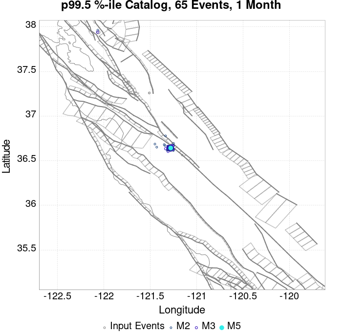
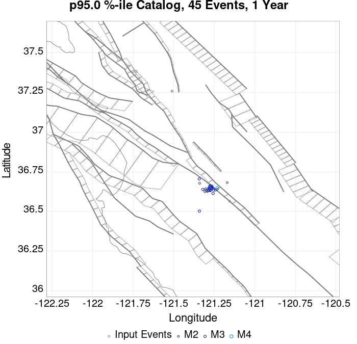
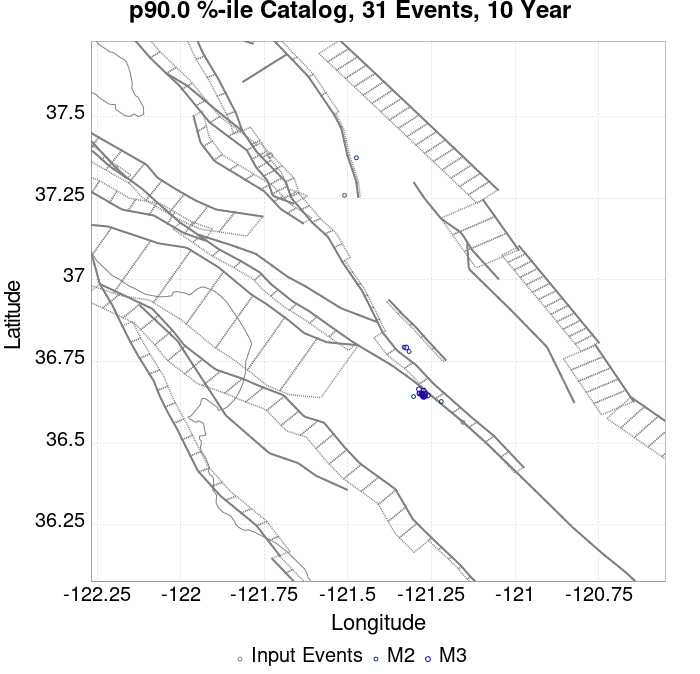
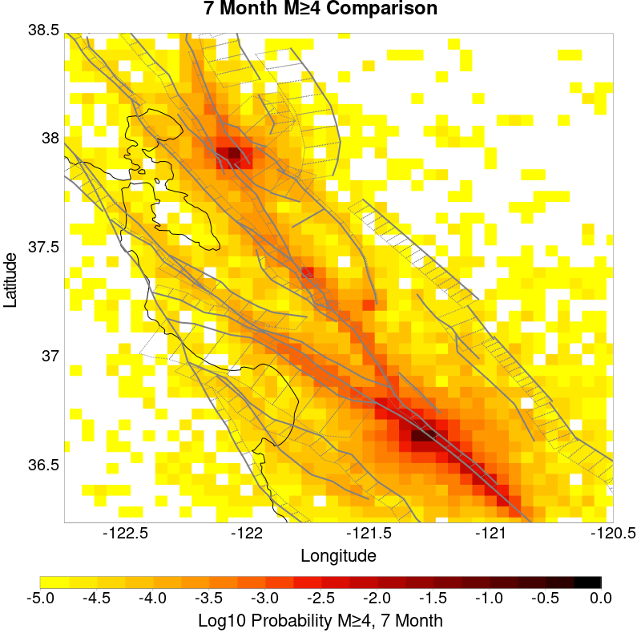
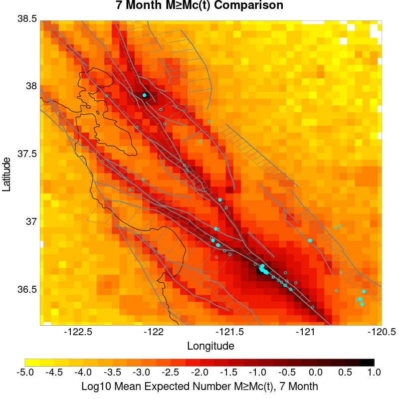
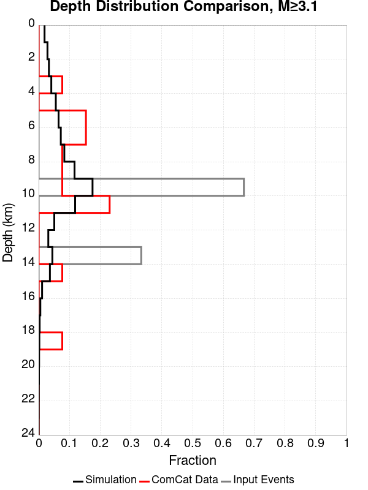
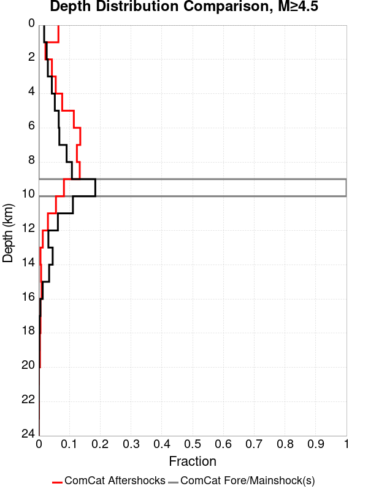
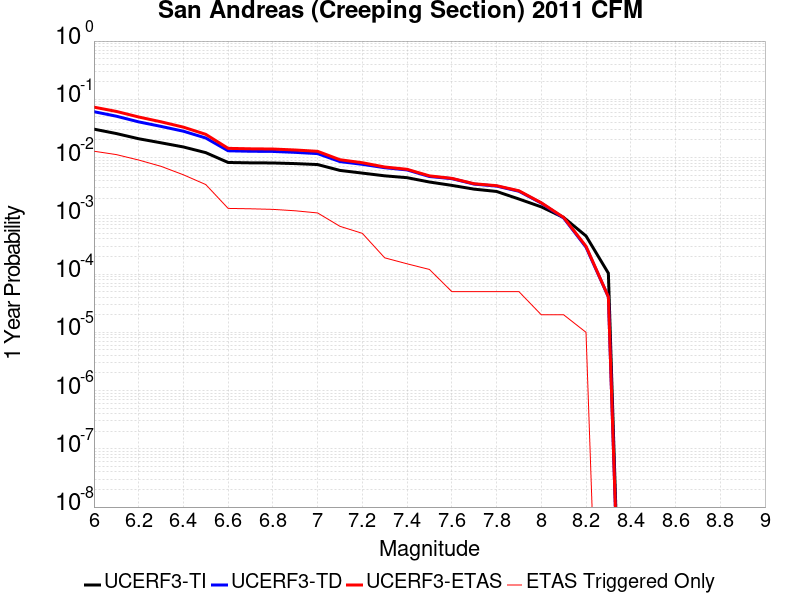
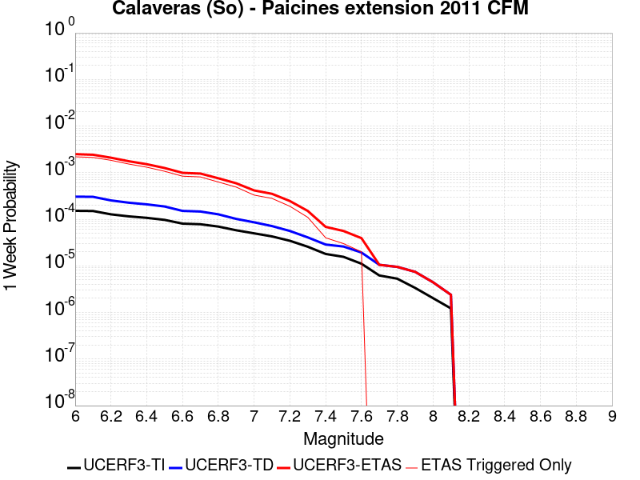
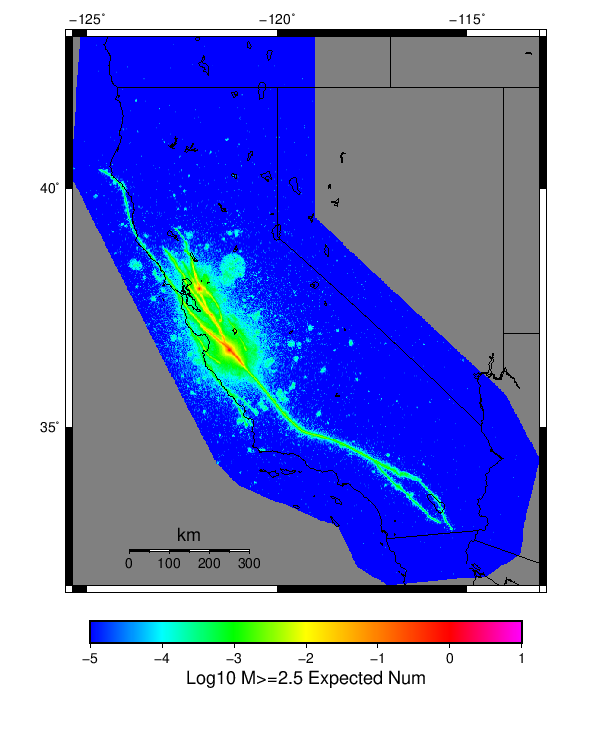

| ComCat M4.71 (nc73292360), Point Sources | |
|---|---|
| Num Simulations | 55500 (incomplete) |
| Start Time | 2019/10/15 19:42:31 UTC |
| Start Time Epoch Milliseconds | 1571168551550 |
| Duration | 10 Years |
| Includes Spontaneous? | false |
| Historical Ruptures | (none) |
| Config Generated With | u3etas_comcat_event_config_builder.sh --event-id nc73292360 --region 38.5,-122.75,36.25,-120.5 --num-simulations 100000 --days-before 7 --hpc-site USC_HPC --nodes 36 --hours 24 --queue scec |
| Magnitude | 1 Hour Prob | 1 Day Prob | 1 Week Prob | 1 Month Prob | 1 Year Prob | 10 Year Prob |
|---|---|---|---|---|---|---|
| M≥3 | 0.451 (45.14%) | 0.778 (77.81%) | 0.881 (88.08%) | 0.925 (92.50%) | 0.964 (96.35%) | 0.979 (97.94%) |
| M≥3.5 | 0.177 (17.75%) | 0.394 (39.36%) | 0.509 (50.90%) | 0.579 (57.92%) | 0.672 (67.16%) | 0.731 (73.06%) |
| M≥4 | 0.062 (6.24%) | 0.155 (15.52%) | 0.213 (21.29%) | 0.253 (25.32%) | 0.317 (31.67%) | 0.362 (36.24%) |
| M≥4.5 | 0.021 (2.10%) | 0.057 (5.68%) | 0.080 (8.01%) | 0.098 (9.80%) | 0.126 (12.59%) | 0.148 (14.83%) |
| M≥4.71 | 0.014 (1.37%) | 0.038 (3.80%) | 0.053 (5.32%) | 0.065 (6.54%) | 0.084 (8.45%) | 0.101 (10.11%) |
| M≥5 | 7.73E-3 (0.77%) | 0.022 (2.19%) | 0.031 (3.15%) | 0.039 (3.89%) | 0.050 (5.01%) | 0.060 (6.02%) |
| M≥5.5 | 3.89E-3 (0.39%) | 0.011 (1.06%) | 0.015 (1.51%) | 0.019 (1.89%) | 0.025 (2.48%) | 0.030 (2.99%) |
| M≥6 | 2.58E-3 (0.26%) | 6.63E-3 (0.66%) | 9.46E-3 (0.95%) | 0.012 (1.18%) | 0.016 (1.55%) | 0.019 (1.88%) |
| M≥6.5 | 6.13E-4 (0.06%) | 1.86E-3 (0.19%) | 2.94E-3 (0.29%) | 3.69E-3 (0.37%) | 5.14E-3 (0.51%) | 6.23E-3 (0.62%) |
| M≥7 | 1.26E-4 (0.01%) | 6.13E-4 (0.06%) | 8.47E-4 (0.08%) | 1.01E-3 (0.10%) | 1.46E-3 (0.15%) | 1.82E-3 (0.18%) |
| M≥7.5 | 0.000 (0.00%) | 0.000 (0.00%) | 3.60E-5 (0.00%) | 5.41E-5 (0.01%) | 1.08E-4 (0.01%) | 1.62E-4 (0.02%) |
| M≥8 | 0.000 (0.00%) | 0.000 (0.00%) | 0.000 (0.00%) | 0.000 (0.00%) | 0.000 (0.00%) | 1.80E-5 (0.00%) |
Legend
| Mag | Mean | 2.5 %ile | 97.5 %ile | Median | Mode | 10 yr Probability | 10 yr Supra-Seis Prob | Primary Aftershocks Mean |
|---|---|---|---|---|---|---|---|---|
| M≥2.5 | 45.786 | 6.000 | 153.000 | 15.000 | 14.000 | 1.000 (100.00%) | 0.018 (1.83%) | 11.389 |
| M≥2.6 | 36.376 | 4.000 | 121.000 | 12.000 | 10.000 | 1.000 (99.99%) | 0.018 (1.83%) | 9.051 |
| M≥2.7 | 28.904 | 3.000 | 97.000 | 10.000 | 8.000 | 0.999 (99.94%) | 0.018 (1.83%) | 7.199 |
| M≥2.8 | 22.956 | 2.000 | 77.000 | 8.000 | 6.000 | 0.997 (99.71%) | 0.018 (1.83%) | 5.718 |
| M≥2.9 | 18.244 | 1.000 | 62.000 | 6.000 | 5.000 | 0.991 (99.13%) | 0.018 (1.83%) | 4.550 |
| M≥3 | 14.493 | 1.000 | 50.000 | 5.000 | 4.000 | 0.979 (97.94%) | 0.018 (1.83%) | 3.622 |
| M≥3.1 | 11.511 | 0.000 | 40.000 | 4.000 | 3.000 | 0.956 (95.57%) | 0.018 (1.83%) | 2.878 |
| M≥3.2 | 9.151 | 0.000 | 32.000 | 3.000 | 2.000 | 0.919 (91.91%) | 0.018 (1.83%) | 2.293 |
| M≥3.3 | 7.273 | 0.000 | 26.000 | 2.000 | 1.000 | 0.869 (86.94%) | 0.018 (1.83%) | 1.826 |
| M≥3.4 | 5.779 | 0.000 | 21.000 | 2.000 | 1.000 | 0.805 (80.45%) | 0.018 (1.83%) | 1.452 |
| M≥3.5 | 4.588 | 0.000 | 17.000 | 1.000 | 1.000 | 0.731 (73.06%) | 0.018 (1.83%) | 1.152 |
| M≥3.6 | 3.645 | 0.000 | 14.000 | 1.000 | 0.000 | 0.650 (65.04%) | 0.018 (1.83%) | 0.914 |
| M≥3.7 | 2.901 | 0.000 | 12.000 | 1.000 | 0.000 | 0.571 (57.15%) | 0.018 (1.83%) | 0.726 |
| M≥3.8 | 2.306 | 0.000 | 9.000 | 0.000 | 0.000 | 0.496 (49.62%) | 0.018 (1.83%) | 0.580 |
| M≥3.9 | 1.838 | 0.000 | 8.000 | 0.000 | 0.000 | 0.425 (42.48%) | 0.018 (1.83%) | 0.462 |
| M≥4 | 1.465 | 0.000 | 7.000 | 0.000 | 0.000 | 0.362 (36.24%) | 0.018 (1.83%) | 0.371 |
| M≥4.1 | 1.168 | 0.000 | 6.000 | 0.000 | 0.000 | 0.307 (30.67%) | 0.018 (1.83%) | 0.299 |
| M≥4.2 | 0.929 | 0.000 | 5.000 | 0.000 | 0.000 | 0.256 (25.60%) | 0.018 (1.83%) | 0.238 |
| M≥4.3 | 0.740 | 0.000 | 4.000 | 0.000 | 0.000 | 0.214 (21.39%) | 0.018 (1.83%) | 0.191 |
| M≥4.4 | 0.589 | 0.000 | 3.000 | 0.000 | 0.000 | 0.179 (17.86%) | 0.018 (1.83%) | 0.153 |
| M≥4.5 | 0.468 | 0.000 | 3.000 | 0.000 | 0.000 | 0.148 (14.83%) | 0.018 (1.83%) | 0.123 |
| M≥4.6 | 0.372 | 0.000 | 2.000 | 0.000 | 0.000 | 0.123 (12.33%) | 0.018 (1.83%) | 0.099 |
| M≥4.7 | 0.298 | 0.000 | 2.000 | 0.000 | 0.000 | 0.103 (10.29%) | 0.018 (1.83%) | 0.081 |
| M≥4.8 | 0.239 | 0.000 | 2.000 | 0.000 | 0.000 | 0.086 (8.57%) | 0.018 (1.83%) | 0.065 |
| M≥4.9 | 0.192 | 0.000 | 2.000 | 0.000 | 0.000 | 0.071 (7.15%) | 0.018 (1.83%) | 0.054 |
| M≥5 | 0.155 | 0.000 | 1.000 | 0.000 | 0.000 | 0.060 (6.02%) | 0.018 (1.83%) | 0.044 |
| M≥5.1 | 0.126 | 0.000 | 1.000 | 0.000 | 0.000 | 0.052 (5.17%) | 0.018 (1.83%) | 0.037 |
| M≥5.2 | 0.103 | 0.000 | 1.000 | 0.000 | 0.000 | 0.045 (4.48%) | 0.018 (1.83%) | 0.032 |
| M≥5.3 | 0.083 | 0.000 | 1.000 | 0.000 | 0.000 | 0.038 (3.85%) | 0.018 (1.83%) | 0.027 |
| M≥5.4 | 0.068 | 0.000 | 1.000 | 0.000 | 0.000 | 0.034 (3.37%) | 0.018 (1.83%) | 0.023 |
| M≥5.5 | 0.057 | 0.000 | 1.000 | 0.000 | 0.000 | 0.030 (2.99%) | 0.018 (1.83%) | 0.020 |
| M≥5.6 | 0.047 | 0.000 | 1.000 | 0.000 | 0.000 | 0.027 (2.68%) | 0.018 (1.83%) | 0.018 |
| M≥5.7 | 0.039 | 0.000 | 0.000 | 0.000 | 0.000 | 0.024 (2.41%) | 0.018 (1.83%) | 0.016 |
| M≥5.8 | 0.033 | 0.000 | 0.000 | 0.000 | 0.000 | 0.022 (2.20%) | 0.018 (1.83%) | 0.014 |
| M≥5.9 | 0.028 | 0.000 | 0.000 | 0.000 | 0.000 | 0.020 (1.99%) | 0.018 (1.83%) | 0.013 |
| M≥6 | 0.025 | 0.000 | 0.000 | 0.000 | 0.000 | 0.019 (1.88%) | 0.018 (1.80%) | 0.012 |
| M≥6.1 | 0.021 | 0.000 | 0.000 | 0.000 | 0.000 | 0.016 (1.65%) | 0.016 (1.61%) | 0.011 |
| M≥6.2 | 0.017 | 0.000 | 0.000 | 0.000 | 0.000 | 0.014 (1.37%) | 0.013 (1.35%) | 8.58E-3 |
| M≥6.3 | 0.013 | 0.000 | 0.000 | 0.000 | 0.000 | 0.011 (1.10%) | 0.011 (1.08%) | 6.83E-3 |
| M≥6.4 | 0.010 | 0.000 | 0.000 | 0.000 | 0.000 | 8.61E-3 (0.86%) | 8.45E-3 (0.85%) | 5.17E-3 |
| M≥6.5 | 7.46E-3 | 0.000 | 0.000 | 0.000 | 0.000 | 6.23E-3 (0.62%) | 6.14E-3 (0.61%) | 3.53E-3 |
| M≥6.6 | 4.27E-3 | 0.000 | 0.000 | 0.000 | 0.000 | 3.55E-3 (0.35%) | 3.53E-3 (0.35%) | 1.93E-3 |
| M≥6.7 | 3.86E-3 | 0.000 | 0.000 | 0.000 | 0.000 | 3.28E-3 (0.33%) | 3.26E-3 (0.33%) | 1.77E-3 |
| M≥6.8 | 3.17E-3 | 0.000 | 0.000 | 0.000 | 0.000 | 2.77E-3 (0.28%) | 2.76E-3 (0.28%) | 1.37E-3 |
| M≥6.9 | 2.41E-3 | 0.000 | 0.000 | 0.000 | 0.000 | 2.20E-3 (0.22%) | 2.18E-3 (0.22%) | 1.08E-3 |
| M≥7 | 1.93E-3 | 0.000 | 0.000 | 0.000 | 0.000 | 1.82E-3 (0.18%) | 1.80E-3 (0.18%) | 8.83E-4 |
| M≥7.1 | 1.14E-3 | 0.000 | 0.000 | 0.000 | 0.000 | 1.06E-3 (0.11%) | 1.06E-3 (0.11%) | 5.05E-4 |
| M≥7.2 | 7.39E-4 | 0.000 | 0.000 | 0.000 | 0.000 | 7.21E-4 (0.07%) | 7.21E-4 (0.07%) | 3.42E-4 |
| M≥7.3 | 3.42E-4 | 0.000 | 0.000 | 0.000 | 0.000 | 3.24E-4 (0.03%) | 3.24E-4 (0.03%) | 1.62E-4 |
| M≥7.4 | 2.16E-4 | 0.000 | 0.000 | 0.000 | 0.000 | 1.98E-4 (0.02%) | 1.98E-4 (0.02%) | 1.08E-4 |
| M≥7.5 | 1.80E-4 | 0.000 | 0.000 | 0.000 | 0.000 | 1.62E-4 (0.02%) | 1.62E-4 (0.02%) | 9.01E-5 |
| M≥7.6 | 7.21E-5 | 0.000 | 0.000 | 0.000 | 0.000 | 7.21E-5 (0.01%) | 7.21E-5 (0.01%) | 3.60E-5 |
| M≥7.7 | 5.41E-5 | 0.000 | 0.000 | 0.000 | 0.000 | 5.41E-5 (0.01%) | 5.41E-5 (0.01%) | 3.60E-5 |
| M≥7.8 | 5.41E-5 | 0.000 | 0.000 | 0.000 | 0.000 | 5.41E-5 (0.01%) | 5.41E-5 (0.01%) | 3.60E-5 |
| M≥7.9 | 5.41E-5 | 0.000 | 0.000 | 0.000 | 0.000 | 5.41E-5 (0.01%) | 5.41E-5 (0.01%) | 3.60E-5 |
| M≥8 | 1.80E-5 | 0.000 | 0.000 | 0.000 | 0.000 | 1.80E-5 (0.00%) | 1.80E-5 (0.00%) | 1.80E-5 |
| M≥8.1 | 0.000 | 0.000 | 0.000 | 0.000 | 0.000 | 0.000 (0.00%) | 0.000 (0.00%) | 0.000 |
| M≥8.2 | 0.000 | 0.000 | 0.000 | 0.000 | 0.000 | 0.000 (0.00%) | 0.000 (0.00%) | 0.000 |
| M≥8.3 | 0.000 | 0.000 | 0.000 | 0.000 | 0.000 | 0.000 (0.00%) | 0.000 (0.00%) | 0.000 |
| M≥8.4 | 0.000 | 0.000 | 0.000 | 0.000 | 0.000 | 0.000 (0.00%) | 0.000 (0.00%) | 0.000 |
| M≥8.5 | 0.000 | 0.000 | 0.000 | 0.000 | 0.000 | 0.000 (0.00%) | 0.000 (0.00%) | 0.000 |
| M≥8.6 | 0.000 | 0.000 | 0.000 | 0.000 | 0.000 | 0.000 (0.00%) | 0.000 (0.00%) | 0.000 |
| M≥8.7 | 0.000 | 0.000 | 0.000 | 0.000 | 0.000 | 0.000 (0.00%) | 0.000 (0.00%) | 0.000 |
| M≥8.8 | 0.000 | 0.000 | 0.000 | 0.000 | 0.000 | 0.000 (0.00%) | 0.000 (0.00%) | 0.000 |
| M≥8.9 | 0.000 | 0.000 | 0.000 | 0.000 | 0.000 | 0.000 (0.00%) | 0.000 (0.00%) | 0.000 |
| M≥9 | 0.000 | 0.000 | 0.000 | 0.000 | 0.000 | 0.000 (0.00%) | 0.000 (0.00%) | 0.000 |
Legend

| Mag | Mean | 2.5 %ile | 97.5 %ile | Median | Mode | 1 yr Probability | 1 yr Supra-Seis Prob | Primary Aftershocks Mean |
|---|---|---|---|---|---|---|---|---|
| M≥2.5 | 31.480 | 5.000 | 88.000 | 13.000 | 10.000 | 1.000 (99.99%) | 0.015 (1.51%) | 9.803 |
| M≥2.6 | 25.008 | 3.000 | 69.000 | 10.000 | 8.000 | 1.000 (99.95%) | 0.015 (1.51%) | 7.793 |
| M≥2.7 | 19.870 | 2.000 | 56.000 | 8.000 | 6.000 | 0.998 (99.80%) | 0.015 (1.51%) | 6.197 |
| M≥2.8 | 15.778 | 1.000 | 45.000 | 6.000 | 5.000 | 0.994 (99.39%) | 0.015 (1.51%) | 4.924 |
| M≥2.9 | 12.544 | 1.000 | 36.000 | 5.000 | 4.000 | 0.983 (98.34%) | 0.015 (1.51%) | 3.920 |
| M≥3 | 9.966 | 0.000 | 29.000 | 4.000 | 3.000 | 0.964 (96.35%) | 0.015 (1.51%) | 3.122 |
| M≥3.1 | 7.913 | 0.000 | 24.000 | 3.000 | 2.000 | 0.930 (93.01%) | 0.015 (1.51%) | 2.482 |
| M≥3.2 | 6.290 | 0.000 | 19.000 | 2.000 | 1.000 | 0.882 (88.16%) | 0.015 (1.51%) | 1.978 |
| M≥3.3 | 5.002 | 0.000 | 16.000 | 2.000 | 1.000 | 0.822 (82.20%) | 0.015 (1.51%) | 1.575 |
| M≥3.4 | 3.977 | 0.000 | 13.000 | 1.000 | 1.000 | 0.750 (75.02%) | 0.015 (1.51%) | 1.253 |
| M≥3.5 | 3.162 | 0.000 | 10.000 | 1.000 | 0.000 | 0.672 (67.16%) | 0.015 (1.51%) | 0.996 |
| M≥3.6 | 2.510 | 0.000 | 9.000 | 1.000 | 0.000 | 0.591 (59.07%) | 0.015 (1.51%) | 0.790 |
| M≥3.7 | 1.998 | 0.000 | 7.000 | 1.000 | 0.000 | 0.513 (51.29%) | 0.015 (1.51%) | 0.627 |
| M≥3.8 | 1.589 | 0.000 | 6.000 | 0.000 | 0.000 | 0.441 (44.12%) | 0.015 (1.51%) | 0.501 |
| M≥3.9 | 1.265 | 0.000 | 5.000 | 0.000 | 0.000 | 0.374 (37.41%) | 0.015 (1.51%) | 0.400 |
| M≥4 | 1.009 | 0.000 | 4.000 | 0.000 | 0.000 | 0.317 (31.67%) | 0.015 (1.51%) | 0.321 |
| M≥4.1 | 0.808 | 0.000 | 4.000 | 0.000 | 0.000 | 0.266 (26.64%) | 0.015 (1.51%) | 0.258 |
| M≥4.2 | 0.642 | 0.000 | 3.000 | 0.000 | 0.000 | 0.220 (22.04%) | 0.015 (1.51%) | 0.206 |
| M≥4.3 | 0.511 | 0.000 | 3.000 | 0.000 | 0.000 | 0.183 (18.26%) | 0.015 (1.51%) | 0.165 |
| M≥4.4 | 0.408 | 0.000 | 2.000 | 0.000 | 0.000 | 0.152 (15.18%) | 0.015 (1.51%) | 0.132 |
| M≥4.5 | 0.325 | 0.000 | 2.000 | 0.000 | 0.000 | 0.126 (12.59%) | 0.015 (1.51%) | 0.106 |
| M≥4.6 | 0.259 | 0.000 | 2.000 | 0.000 | 0.000 | 0.104 (10.40%) | 0.015 (1.51%) | 0.086 |
| M≥4.7 | 0.207 | 0.000 | 2.000 | 0.000 | 0.000 | 0.086 (8.59%) | 0.015 (1.51%) | 0.069 |
| M≥4.8 | 0.167 | 0.000 | 1.000 | 0.000 | 0.000 | 0.071 (7.14%) | 0.015 (1.51%) | 0.056 |
| M≥4.9 | 0.134 | 0.000 | 1.000 | 0.000 | 0.000 | 0.059 (5.95%) | 0.015 (1.51%) | 0.046 |
| M≥5 | 0.109 | 0.000 | 1.000 | 0.000 | 0.000 | 0.050 (5.01%) | 0.015 (1.51%) | 0.038 |
| M≥5.1 | 0.089 | 0.000 | 1.000 | 0.000 | 0.000 | 0.043 (4.31%) | 0.015 (1.51%) | 0.033 |
| M≥5.2 | 0.073 | 0.000 | 1.000 | 0.000 | 0.000 | 0.037 (3.75%) | 0.015 (1.51%) | 0.028 |
| M≥5.3 | 0.059 | 0.000 | 1.000 | 0.000 | 0.000 | 0.032 (3.20%) | 0.015 (1.51%) | 0.023 |
| M≥5.4 | 0.049 | 0.000 | 1.000 | 0.000 | 0.000 | 0.028 (2.80%) | 0.015 (1.51%) | 0.020 |
| M≥5.5 | 0.041 | 0.000 | 0.000 | 0.000 | 0.000 | 0.025 (2.48%) | 0.015 (1.51%) | 0.018 |
| M≥5.6 | 0.035 | 0.000 | 0.000 | 0.000 | 0.000 | 0.022 (2.22%) | 0.015 (1.51%) | 0.016 |
| M≥5.7 | 0.030 | 0.000 | 0.000 | 0.000 | 0.000 | 0.020 (2.01%) | 0.015 (1.51%) | 0.014 |
| M≥5.8 | 0.025 | 0.000 | 0.000 | 0.000 | 0.000 | 0.018 (1.83%) | 0.015 (1.51%) | 0.013 |
| M≥5.9 | 0.022 | 0.000 | 0.000 | 0.000 | 0.000 | 0.016 (1.64%) | 0.015 (1.51%) | 0.011 |
| M≥6 | 0.019 | 0.000 | 0.000 | 0.000 | 0.000 | 0.016 (1.55%) | 0.015 (1.49%) | 0.011 |
| M≥6.1 | 0.017 | 0.000 | 0.000 | 0.000 | 0.000 | 0.014 (1.36%) | 0.013 (1.32%) | 9.33E-3 |
| M≥6.2 | 0.013 | 0.000 | 0.000 | 0.000 | 0.000 | 0.011 (1.14%) | 0.011 (1.12%) | 7.66E-3 |
| M≥6.3 | 0.011 | 0.000 | 0.000 | 0.000 | 0.000 | 9.10E-3 (0.91%) | 8.95E-3 (0.90%) | 6.05E-3 |
| M≥6.4 | 8.09E-3 | 0.000 | 0.000 | 0.000 | 0.000 | 7.05E-3 (0.70%) | 6.90E-3 (0.69%) | 4.52E-3 |
| M≥6.5 | 5.82E-3 | 0.000 | 0.000 | 0.000 | 0.000 | 5.14E-3 (0.51%) | 5.06E-3 (0.51%) | 3.14E-3 |
| M≥6.6 | 3.21E-3 | 0.000 | 0.000 | 0.000 | 0.000 | 2.86E-3 (0.29%) | 2.85E-3 (0.28%) | 1.66E-3 |
| M≥6.7 | 2.88E-3 | 0.000 | 0.000 | 0.000 | 0.000 | 2.63E-3 (0.26%) | 2.61E-3 (0.26%) | 1.51E-3 |
| M≥6.8 | 2.36E-3 | 0.000 | 0.000 | 0.000 | 0.000 | 2.18E-3 (0.22%) | 2.16E-3 (0.22%) | 1.17E-3 |
| M≥6.9 | 1.84E-3 | 0.000 | 0.000 | 0.000 | 0.000 | 1.75E-3 (0.17%) | 1.73E-3 (0.17%) | 9.19E-4 |
| M≥7 | 1.51E-3 | 0.000 | 0.000 | 0.000 | 0.000 | 1.46E-3 (0.15%) | 1.44E-3 (0.14%) | 7.57E-4 |
| M≥7.1 | 8.83E-4 | 0.000 | 0.000 | 0.000 | 0.000 | 8.47E-4 (0.08%) | 8.47E-4 (0.08%) | 4.14E-4 |
| M≥7.2 | 5.59E-4 | 0.000 | 0.000 | 0.000 | 0.000 | 5.59E-4 (0.06%) | 5.59E-4 (0.06%) | 2.70E-4 |
| M≥7.3 | 2.16E-4 | 0.000 | 0.000 | 0.000 | 0.000 | 2.16E-4 (0.02%) | 2.16E-4 (0.02%) | 1.08E-4 |
| M≥7.4 | 1.26E-4 | 0.000 | 0.000 | 0.000 | 0.000 | 1.26E-4 (0.01%) | 1.26E-4 (0.01%) | 7.21E-5 |
| M≥7.5 | 1.08E-4 | 0.000 | 0.000 | 0.000 | 0.000 | 1.08E-4 (0.01%) | 1.08E-4 (0.01%) | 5.41E-5 |
| M≥7.6 | 3.60E-5 | 0.000 | 0.000 | 0.000 | 0.000 | 3.60E-5 (0.00%) | 3.60E-5 (0.00%) | 1.80E-5 |
| M≥7.7 | 1.80E-5 | 0.000 | 0.000 | 0.000 | 0.000 | 1.80E-5 (0.00%) | 1.80E-5 (0.00%) | 1.80E-5 |
| M≥7.8 | 1.80E-5 | 0.000 | 0.000 | 0.000 | 0.000 | 1.80E-5 (0.00%) | 1.80E-5 (0.00%) | 1.80E-5 |
| M≥7.9 | 1.80E-5 | 0.000 | 0.000 | 0.000 | 0.000 | 1.80E-5 (0.00%) | 1.80E-5 (0.00%) | 1.80E-5 |
| M≥8 | 0.000 | 0.000 | 0.000 | 0.000 | 0.000 | 0.000 (0.00%) | 0.000 (0.00%) | 0.000 |
| M≥8.1 | 0.000 | 0.000 | 0.000 | 0.000 | 0.000 | 0.000 (0.00%) | 0.000 (0.00%) | 0.000 |
| M≥8.2 | 0.000 | 0.000 | 0.000 | 0.000 | 0.000 | 0.000 (0.00%) | 0.000 (0.00%) | 0.000 |
| M≥8.3 | 0.000 | 0.000 | 0.000 | 0.000 | 0.000 | 0.000 (0.00%) | 0.000 (0.00%) | 0.000 |
| M≥8.4 | 0.000 | 0.000 | 0.000 | 0.000 | 0.000 | 0.000 (0.00%) | 0.000 (0.00%) | 0.000 |
| M≥8.5 | 0.000 | 0.000 | 0.000 | 0.000 | 0.000 | 0.000 (0.00%) | 0.000 (0.00%) | 0.000 |
| M≥8.6 | 0.000 | 0.000 | 0.000 | 0.000 | 0.000 | 0.000 (0.00%) | 0.000 (0.00%) | 0.000 |
| M≥8.7 | 0.000 | 0.000 | 0.000 | 0.000 | 0.000 | 0.000 (0.00%) | 0.000 (0.00%) | 0.000 |
| M≥8.8 | 0.000 | 0.000 | 0.000 | 0.000 | 0.000 | 0.000 (0.00%) | 0.000 (0.00%) | 0.000 |
| M≥8.9 | 0.000 | 0.000 | 0.000 | 0.000 | 0.000 | 0.000 (0.00%) | 0.000 (0.00%) | 0.000 |
| M≥9 | 0.000 | 0.000 | 0.000 | 0.000 | 0.000 | 0.000 (0.00%) | 0.000 (0.00%) | 0.000 |
Legend

| Mag | Mean | 2.5 %ile | 97.5 %ile | Median | Mode | 1 mo Probability | 1 mo Supra-Seis Prob | Primary Aftershocks Mean |
|---|---|---|---|---|---|---|---|---|
| M≥2.5 | 19.484 | 3.000 | 45.000 | 9.000 | 8.000 | 1.000 (99.97%) | 0.012 (1.16%) | 7.766 |
| M≥2.6 | 15.480 | 2.000 | 36.000 | 7.000 | 6.000 | 0.998 (99.79%) | 0.012 (1.16%) | 6.172 |
| M≥2.7 | 12.303 | 1.000 | 29.000 | 6.000 | 5.000 | 0.993 (99.28%) | 0.012 (1.16%) | 4.907 |
| M≥2.8 | 9.774 | 1.000 | 23.000 | 5.000 | 4.000 | 0.982 (98.17%) | 0.012 (1.16%) | 3.902 |
| M≥2.9 | 7.773 | 0.000 | 19.000 | 4.000 | 3.000 | 0.960 (95.99%) | 0.012 (1.16%) | 3.108 |
| M≥3 | 6.178 | 0.000 | 16.000 | 3.000 | 2.000 | 0.925 (92.50%) | 0.012 (1.16%) | 2.476 |
| M≥3.1 | 4.901 | 0.000 | 13.000 | 2.000 | 1.000 | 0.874 (87.41%) | 0.012 (1.16%) | 1.968 |
| M≥3.2 | 3.899 | 0.000 | 11.000 | 2.000 | 1.000 | 0.811 (81.11%) | 0.012 (1.16%) | 1.568 |
| M≥3.3 | 3.098 | 0.000 | 9.000 | 1.000 | 1.000 | 0.739 (73.95%) | 0.012 (1.16%) | 1.248 |
| M≥3.4 | 2.463 | 0.000 | 8.000 | 1.000 | 0.000 | 0.660 (65.98%) | 0.012 (1.16%) | 0.993 |
| M≥3.5 | 1.957 | 0.000 | 6.000 | 1.000 | 0.000 | 0.579 (57.92%) | 0.012 (1.16%) | 0.789 |
| M≥3.6 | 1.555 | 0.000 | 5.000 | 0.000 | 0.000 | 0.499 (49.95%) | 0.012 (1.16%) | 0.626 |
| M≥3.7 | 1.237 | 0.000 | 5.000 | 0.000 | 0.000 | 0.426 (42.61%) | 0.012 (1.16%) | 0.496 |
| M≥3.8 | 0.986 | 0.000 | 4.000 | 0.000 | 0.000 | 0.362 (36.20%) | 0.012 (1.16%) | 0.397 |
| M≥3.9 | 0.785 | 0.000 | 3.000 | 0.000 | 0.000 | 0.303 (30.28%) | 0.012 (1.16%) | 0.316 |
| M≥4 | 0.626 | 0.000 | 3.000 | 0.000 | 0.000 | 0.253 (25.32%) | 0.012 (1.16%) | 0.254 |
| M≥4.1 | 0.502 | 0.000 | 3.000 | 0.000 | 0.000 | 0.211 (21.12%) | 0.012 (1.16%) | 0.205 |
| M≥4.2 | 0.399 | 0.000 | 2.000 | 0.000 | 0.000 | 0.174 (17.41%) | 0.012 (1.16%) | 0.163 |
| M≥4.3 | 0.318 | 0.000 | 2.000 | 0.000 | 0.000 | 0.143 (14.32%) | 0.012 (1.16%) | 0.131 |
| M≥4.4 | 0.255 | 0.000 | 2.000 | 0.000 | 0.000 | 0.119 (11.86%) | 0.012 (1.16%) | 0.105 |
| M≥4.5 | 0.204 | 0.000 | 2.000 | 0.000 | 0.000 | 0.098 (9.80%) | 0.012 (1.16%) | 0.085 |
| M≥4.6 | 0.162 | 0.000 | 1.000 | 0.000 | 0.000 | 0.081 (8.08%) | 0.012 (1.16%) | 0.069 |
| M≥4.7 | 0.130 | 0.000 | 1.000 | 0.000 | 0.000 | 0.067 (6.65%) | 0.012 (1.16%) | 0.056 |
| M≥4.8 | 0.105 | 0.000 | 1.000 | 0.000 | 0.000 | 0.055 (5.50%) | 0.012 (1.16%) | 0.046 |
| M≥4.9 | 0.086 | 0.000 | 1.000 | 0.000 | 0.000 | 0.046 (4.60%) | 0.012 (1.16%) | 0.038 |
| M≥5 | 0.069 | 0.000 | 1.000 | 0.000 | 0.000 | 0.039 (3.89%) | 0.012 (1.16%) | 0.031 |
| M≥5.1 | 0.057 | 0.000 | 1.000 | 0.000 | 0.000 | 0.034 (3.36%) | 0.012 (1.16%) | 0.027 |
| M≥5.2 | 0.048 | 0.000 | 1.000 | 0.000 | 0.000 | 0.029 (2.90%) | 0.012 (1.16%) | 0.023 |
| M≥5.3 | 0.039 | 0.000 | 0.000 | 0.000 | 0.000 | 0.025 (2.48%) | 0.012 (1.16%) | 0.019 |
| M≥5.4 | 0.033 | 0.000 | 0.000 | 0.000 | 0.000 | 0.022 (2.16%) | 0.012 (1.16%) | 0.017 |
| M≥5.5 | 0.028 | 0.000 | 0.000 | 0.000 | 0.000 | 0.019 (1.89%) | 0.012 (1.16%) | 0.015 |
| M≥5.6 | 0.024 | 0.000 | 0.000 | 0.000 | 0.000 | 0.017 (1.69%) | 0.012 (1.16%) | 0.013 |
| M≥5.7 | 0.020 | 0.000 | 0.000 | 0.000 | 0.000 | 0.015 (1.52%) | 0.012 (1.16%) | 0.012 |
| M≥5.8 | 0.018 | 0.000 | 0.000 | 0.000 | 0.000 | 0.014 (1.38%) | 0.012 (1.16%) | 0.011 |
| M≥5.9 | 0.015 | 0.000 | 0.000 | 0.000 | 0.000 | 0.012 (1.24%) | 0.012 (1.15%) | 9.51E-3 |
| M≥6 | 0.014 | 0.000 | 0.000 | 0.000 | 0.000 | 0.012 (1.18%) | 0.011 (1.14%) | 9.05E-3 |
| M≥6.1 | 0.012 | 0.000 | 0.000 | 0.000 | 0.000 | 0.010 (1.03%) | 0.010 (1.00%) | 7.75E-3 |
| M≥6.2 | 9.68E-3 | 0.000 | 0.000 | 0.000 | 0.000 | 8.52E-3 (0.85%) | 8.40E-3 (0.84%) | 6.32E-3 |
| M≥6.3 | 7.51E-3 | 0.000 | 0.000 | 0.000 | 0.000 | 6.77E-3 (0.68%) | 6.67E-3 (0.67%) | 4.95E-3 |
| M≥6.4 | 5.66E-3 | 0.000 | 0.000 | 0.000 | 0.000 | 5.15E-3 (0.52%) | 5.05E-3 (0.50%) | 3.60E-3 |
| M≥6.5 | 4.02E-3 | 0.000 | 0.000 | 0.000 | 0.000 | 3.69E-3 (0.37%) | 3.66E-3 (0.37%) | 2.58E-3 |
| M≥6.6 | 2.09E-3 | 0.000 | 0.000 | 0.000 | 0.000 | 1.93E-3 (0.19%) | 1.91E-3 (0.19%) | 1.33E-3 |
| M≥6.7 | 1.87E-3 | 0.000 | 0.000 | 0.000 | 0.000 | 1.77E-3 (0.18%) | 1.75E-3 (0.17%) | 1.21E-3 |
| M≥6.8 | 1.55E-3 | 0.000 | 0.000 | 0.000 | 0.000 | 1.48E-3 (0.15%) | 1.46E-3 (0.15%) | 9.91E-4 |
| M≥6.9 | 1.30E-3 | 0.000 | 0.000 | 0.000 | 0.000 | 1.24E-3 (0.12%) | 1.23E-3 (0.12%) | 8.11E-4 |
| M≥7 | 1.05E-3 | 0.000 | 0.000 | 0.000 | 0.000 | 1.01E-3 (0.10%) | 9.91E-4 (0.10%) | 6.49E-4 |
| M≥7.1 | 6.49E-4 | 0.000 | 0.000 | 0.000 | 0.000 | 6.31E-4 (0.06%) | 6.31E-4 (0.06%) | 3.60E-4 |
| M≥7.2 | 4.68E-4 | 0.000 | 0.000 | 0.000 | 0.000 | 4.68E-4 (0.05%) | 4.68E-4 (0.05%) | 2.52E-4 |
| M≥7.3 | 1.62E-4 | 0.000 | 0.000 | 0.000 | 0.000 | 1.62E-4 (0.02%) | 1.62E-4 (0.02%) | 9.01E-5 |
| M≥7.4 | 7.21E-5 | 0.000 | 0.000 | 0.000 | 0.000 | 7.21E-5 (0.01%) | 7.21E-5 (0.01%) | 5.41E-5 |
| M≥7.5 | 5.41E-5 | 0.000 | 0.000 | 0.000 | 0.000 | 5.41E-5 (0.01%) | 5.41E-5 (0.01%) | 3.60E-5 |
| M≥7.6 | 1.80E-5 | 0.000 | 0.000 | 0.000 | 0.000 | 1.80E-5 (0.00%) | 1.80E-5 (0.00%) | 0.000 |
| M≥7.7 | 0.000 | 0.000 | 0.000 | 0.000 | 0.000 | 0.000 (0.00%) | 0.000 (0.00%) | 0.000 |
| M≥7.8 | 0.000 | 0.000 | 0.000 | 0.000 | 0.000 | 0.000 (0.00%) | 0.000 (0.00%) | 0.000 |
| M≥7.9 | 0.000 | 0.000 | 0.000 | 0.000 | 0.000 | 0.000 (0.00%) | 0.000 (0.00%) | 0.000 |
| M≥8 | 0.000 | 0.000 | 0.000 | 0.000 | 0.000 | 0.000 (0.00%) | 0.000 (0.00%) | 0.000 |
| M≥8.1 | 0.000 | 0.000 | 0.000 | 0.000 | 0.000 | 0.000 (0.00%) | 0.000 (0.00%) | 0.000 |
| M≥8.2 | 0.000 | 0.000 | 0.000 | 0.000 | 0.000 | 0.000 (0.00%) | 0.000 (0.00%) | 0.000 |
| M≥8.3 | 0.000 | 0.000 | 0.000 | 0.000 | 0.000 | 0.000 (0.00%) | 0.000 (0.00%) | 0.000 |
| M≥8.4 | 0.000 | 0.000 | 0.000 | 0.000 | 0.000 | 0.000 (0.00%) | 0.000 (0.00%) | 0.000 |
| M≥8.5 | 0.000 | 0.000 | 0.000 | 0.000 | 0.000 | 0.000 (0.00%) | 0.000 (0.00%) | 0.000 |
| M≥8.6 | 0.000 | 0.000 | 0.000 | 0.000 | 0.000 | 0.000 (0.00%) | 0.000 (0.00%) | 0.000 |
| M≥8.7 | 0.000 | 0.000 | 0.000 | 0.000 | 0.000 | 0.000 (0.00%) | 0.000 (0.00%) | 0.000 |
| M≥8.8 | 0.000 | 0.000 | 0.000 | 0.000 | 0.000 | 0.000 (0.00%) | 0.000 (0.00%) | 0.000 |
| M≥8.9 | 0.000 | 0.000 | 0.000 | 0.000 | 0.000 | 0.000 (0.00%) | 0.000 (0.00%) | 0.000 |
| M≥9 | 0.000 | 0.000 | 0.000 | 0.000 | 0.000 | 0.000 (0.00%) | 0.000 (0.00%) | 0.000 |
Legend

| Mag | Mean | 2.5 %ile | 97.5 %ile | Median | Mode | 1 wk Probability | 1 wk Supra-Seis Prob | Primary Aftershocks Mean |
|---|---|---|---|---|---|---|---|---|
| M≥2.5 | 14.089 | 2.000 | 29.000 | 7.000 | 6.000 | 0.998 (99.85%) | 9.23E-3 (0.92%) | 6.436 |
| M≥2.6 | 11.195 | 1.000 | 24.000 | 6.000 | 5.000 | 0.994 (99.41%) | 9.23E-3 (0.92%) | 5.116 |
| M≥2.7 | 8.897 | 1.000 | 19.000 | 5.000 | 4.000 | 0.984 (98.38%) | 9.23E-3 (0.92%) | 4.067 |
| M≥2.8 | 7.069 | 0.000 | 16.000 | 4.000 | 3.000 | 0.963 (96.28%) | 9.23E-3 (0.92%) | 3.235 |
| M≥2.9 | 5.622 | 0.000 | 13.000 | 3.000 | 2.000 | 0.929 (92.93%) | 9.23E-3 (0.92%) | 2.579 |
| M≥3 | 4.472 | 0.000 | 11.000 | 2.000 | 2.000 | 0.881 (88.08%) | 9.23E-3 (0.92%) | 2.056 |
| M≥3.1 | 3.549 | 0.000 | 9.000 | 2.000 | 1.000 | 0.818 (81.84%) | 9.23E-3 (0.92%) | 1.634 |
| M≥3.2 | 2.823 | 0.000 | 8.000 | 1.000 | 1.000 | 0.747 (74.74%) | 9.23E-3 (0.92%) | 1.303 |
| M≥3.3 | 2.244 | 0.000 | 6.000 | 1.000 | 0.000 | 0.669 (66.93%) | 9.23E-3 (0.92%) | 1.038 |
| M≥3.4 | 1.784 | 0.000 | 6.000 | 1.000 | 0.000 | 0.588 (58.76%) | 9.23E-3 (0.92%) | 0.827 |
| M≥3.5 | 1.419 | 0.000 | 5.000 | 1.000 | 0.000 | 0.509 (50.90%) | 9.23E-3 (0.92%) | 0.657 |
| M≥3.6 | 1.127 | 0.000 | 4.000 | 0.000 | 0.000 | 0.434 (43.39%) | 9.23E-3 (0.92%) | 0.522 |
| M≥3.7 | 0.899 | 0.000 | 4.000 | 0.000 | 0.000 | 0.366 (36.62%) | 9.23E-3 (0.92%) | 0.415 |
| M≥3.8 | 0.717 | 0.000 | 3.000 | 0.000 | 0.000 | 0.309 (30.88%) | 9.23E-3 (0.92%) | 0.333 |
| M≥3.9 | 0.569 | 0.000 | 3.000 | 0.000 | 0.000 | 0.255 (25.54%) | 9.23E-3 (0.92%) | 0.264 |
| M≥4 | 0.454 | 0.000 | 2.000 | 0.000 | 0.000 | 0.213 (21.29%) | 9.23E-3 (0.92%) | 0.213 |
| M≥4.1 | 0.364 | 0.000 | 2.000 | 0.000 | 0.000 | 0.177 (17.66%) | 9.23E-3 (0.92%) | 0.171 |
| M≥4.2 | 0.290 | 0.000 | 2.000 | 0.000 | 0.000 | 0.144 (14.44%) | 9.23E-3 (0.92%) | 0.136 |
| M≥4.3 | 0.231 | 0.000 | 2.000 | 0.000 | 0.000 | 0.118 (11.82%) | 9.23E-3 (0.92%) | 0.109 |
| M≥4.4 | 0.185 | 0.000 | 1.000 | 0.000 | 0.000 | 0.097 (9.74%) | 9.23E-3 (0.92%) | 0.088 |
| M≥4.5 | 0.148 | 0.000 | 1.000 | 0.000 | 0.000 | 0.080 (8.01%) | 9.23E-3 (0.92%) | 0.071 |
| M≥4.6 | 0.119 | 0.000 | 1.000 | 0.000 | 0.000 | 0.066 (6.62%) | 9.23E-3 (0.92%) | 0.058 |
| M≥4.7 | 0.095 | 0.000 | 1.000 | 0.000 | 0.000 | 0.054 (5.41%) | 9.23E-3 (0.92%) | 0.047 |
| M≥4.8 | 0.077 | 0.000 | 1.000 | 0.000 | 0.000 | 0.045 (4.46%) | 9.23E-3 (0.92%) | 0.038 |
| M≥4.9 | 0.063 | 0.000 | 1.000 | 0.000 | 0.000 | 0.037 (3.72%) | 9.23E-3 (0.92%) | 0.031 |
| M≥5 | 0.051 | 0.000 | 1.000 | 0.000 | 0.000 | 0.031 (3.15%) | 9.23E-3 (0.92%) | 0.026 |
| M≥5.1 | 0.043 | 0.000 | 1.000 | 0.000 | 0.000 | 0.027 (2.72%) | 9.23E-3 (0.92%) | 0.022 |
| M≥5.2 | 0.036 | 0.000 | 0.000 | 0.000 | 0.000 | 0.023 (2.34%) | 9.23E-3 (0.92%) | 0.019 |
| M≥5.3 | 0.029 | 0.000 | 0.000 | 0.000 | 0.000 | 0.020 (2.01%) | 9.23E-3 (0.92%) | 0.017 |
| M≥5.4 | 0.025 | 0.000 | 0.000 | 0.000 | 0.000 | 0.017 (1.74%) | 9.23E-3 (0.92%) | 0.014 |
| M≥5.5 | 0.021 | 0.000 | 0.000 | 0.000 | 0.000 | 0.015 (1.51%) | 9.23E-3 (0.92%) | 0.012 |
| M≥5.6 | 0.018 | 0.000 | 0.000 | 0.000 | 0.000 | 0.013 (1.34%) | 9.23E-3 (0.92%) | 0.011 |
| M≥5.7 | 0.016 | 0.000 | 0.000 | 0.000 | 0.000 | 0.012 (1.22%) | 9.23E-3 (0.92%) | 9.89E-3 |
| M≥5.8 | 0.014 | 0.000 | 0.000 | 0.000 | 0.000 | 0.011 (1.10%) | 9.23E-3 (0.92%) | 8.88E-3 |
| M≥5.9 | 0.012 | 0.000 | 0.000 | 0.000 | 0.000 | 9.91E-3 (0.99%) | 9.23E-3 (0.92%) | 8.04E-3 |
| M≥6 | 0.011 | 0.000 | 0.000 | 0.000 | 0.000 | 9.46E-3 (0.95%) | 9.08E-3 (0.91%) | 7.59E-3 |
| M≥6.1 | 9.26E-3 | 0.000 | 0.000 | 0.000 | 0.000 | 8.18E-3 (0.82%) | 8.00E-3 (0.80%) | 6.54E-3 |
| M≥6.2 | 7.66E-3 | 0.000 | 0.000 | 0.000 | 0.000 | 6.83E-3 (0.68%) | 6.74E-3 (0.67%) | 5.35E-3 |
| M≥6.3 | 6.02E-3 | 0.000 | 0.000 | 0.000 | 0.000 | 5.50E-3 (0.55%) | 5.42E-3 (0.54%) | 4.18E-3 |
| M≥6.4 | 4.43E-3 | 0.000 | 0.000 | 0.000 | 0.000 | 4.11E-3 (0.41%) | 4.04E-3 (0.40%) | 3.01E-3 |
| M≥6.5 | 3.14E-3 | 0.000 | 0.000 | 0.000 | 0.000 | 2.94E-3 (0.29%) | 2.90E-3 (0.29%) | 2.18E-3 |
| M≥6.6 | 1.62E-3 | 0.000 | 0.000 | 0.000 | 0.000 | 1.53E-3 (0.15%) | 1.51E-3 (0.15%) | 1.15E-3 |
| M≥6.7 | 1.48E-3 | 0.000 | 0.000 | 0.000 | 0.000 | 1.41E-3 (0.14%) | 1.39E-3 (0.14%) | 1.05E-3 |
| M≥6.8 | 1.28E-3 | 0.000 | 0.000 | 0.000 | 0.000 | 1.23E-3 (0.12%) | 1.23E-3 (0.12%) | 8.83E-4 |
| M≥6.9 | 1.12E-3 | 0.000 | 0.000 | 0.000 | 0.000 | 1.06E-3 (0.11%) | 1.06E-3 (0.11%) | 7.39E-4 |
| M≥7 | 8.83E-4 | 0.000 | 0.000 | 0.000 | 0.000 | 8.47E-4 (0.08%) | 8.47E-4 (0.08%) | 5.95E-4 |
| M≥7.1 | 5.41E-4 | 0.000 | 0.000 | 0.000 | 0.000 | 5.23E-4 (0.05%) | 5.23E-4 (0.05%) | 3.24E-4 |
| M≥7.2 | 3.96E-4 | 0.000 | 0.000 | 0.000 | 0.000 | 3.96E-4 (0.04%) | 3.96E-4 (0.04%) | 2.16E-4 |
| M≥7.3 | 1.26E-4 | 0.000 | 0.000 | 0.000 | 0.000 | 1.26E-4 (0.01%) | 1.26E-4 (0.01%) | 5.41E-5 |
| M≥7.4 | 5.41E-5 | 0.000 | 0.000 | 0.000 | 0.000 | 5.41E-5 (0.01%) | 5.41E-5 (0.01%) | 3.60E-5 |
| M≥7.5 | 3.60E-5 | 0.000 | 0.000 | 0.000 | 0.000 | 3.60E-5 (0.00%) | 3.60E-5 (0.00%) | 1.80E-5 |
| M≥7.6 | 1.80E-5 | 0.000 | 0.000 | 0.000 | 0.000 | 1.80E-5 (0.00%) | 1.80E-5 (0.00%) | 0.000 |
| M≥7.7 | 0.000 | 0.000 | 0.000 | 0.000 | 0.000 | 0.000 (0.00%) | 0.000 (0.00%) | 0.000 |
| M≥7.8 | 0.000 | 0.000 | 0.000 | 0.000 | 0.000 | 0.000 (0.00%) | 0.000 (0.00%) | 0.000 |
| M≥7.9 | 0.000 | 0.000 | 0.000 | 0.000 | 0.000 | 0.000 (0.00%) | 0.000 (0.00%) | 0.000 |
| M≥8 | 0.000 | 0.000 | 0.000 | 0.000 | 0.000 | 0.000 (0.00%) | 0.000 (0.00%) | 0.000 |
| M≥8.1 | 0.000 | 0.000 | 0.000 | 0.000 | 0.000 | 0.000 (0.00%) | 0.000 (0.00%) | 0.000 |
| M≥8.2 | 0.000 | 0.000 | 0.000 | 0.000 | 0.000 | 0.000 (0.00%) | 0.000 (0.00%) | 0.000 |
| M≥8.3 | 0.000 | 0.000 | 0.000 | 0.000 | 0.000 | 0.000 (0.00%) | 0.000 (0.00%) | 0.000 |
| M≥8.4 | 0.000 | 0.000 | 0.000 | 0.000 | 0.000 | 0.000 (0.00%) | 0.000 (0.00%) | 0.000 |
| M≥8.5 | 0.000 | 0.000 | 0.000 | 0.000 | 0.000 | 0.000 (0.00%) | 0.000 (0.00%) | 0.000 |
| M≥8.6 | 0.000 | 0.000 | 0.000 | 0.000 | 0.000 | 0.000 (0.00%) | 0.000 (0.00%) | 0.000 |
| M≥8.7 | 0.000 | 0.000 | 0.000 | 0.000 | 0.000 | 0.000 (0.00%) | 0.000 (0.00%) | 0.000 |
| M≥8.8 | 0.000 | 0.000 | 0.000 | 0.000 | 0.000 | 0.000 (0.00%) | 0.000 (0.00%) | 0.000 |
| M≥8.9 | 0.000 | 0.000 | 0.000 | 0.000 | 0.000 | 0.000 (0.00%) | 0.000 (0.00%) | 0.000 |
| M≥9 | 0.000 | 0.000 | 0.000 | 0.000 | 0.000 | 0.000 (0.00%) | 0.000 (0.00%) | 0.000 |
Legend

| Mag | Mean | 2.5 %ile | 97.5 %ile | Median | Mode | 1 d Probability | 1 d Supra-Seis Prob | Primary Aftershocks Mean |
|---|---|---|---|---|---|---|---|---|
| M≥2.5 | 8.103 | 1.000 | 16.000 | 5.000 | 4.000 | 0.990 (98.97%) | 6.50E-3 (0.65%) | 4.589 |
| M≥2.6 | 6.433 | 0.000 | 13.000 | 4.000 | 3.000 | 0.974 (97.44%) | 6.50E-3 (0.65%) | 3.648 |
| M≥2.7 | 5.111 | 0.000 | 11.000 | 3.000 | 2.000 | 0.947 (94.68%) | 6.50E-3 (0.65%) | 2.899 |
| M≥2.8 | 4.057 | 0.000 | 9.000 | 2.000 | 2.000 | 0.904 (90.36%) | 6.50E-3 (0.65%) | 2.305 |
| M≥2.9 | 3.229 | 0.000 | 8.000 | 2.000 | 1.000 | 0.846 (84.58%) | 6.50E-3 (0.65%) | 1.837 |
| M≥3 | 2.571 | 0.000 | 7.000 | 1.000 | 1.000 | 0.778 (77.81%) | 6.50E-3 (0.65%) | 1.465 |
| M≥3.1 | 2.044 | 0.000 | 6.000 | 1.000 | 1.000 | 0.701 (70.12%) | 6.50E-3 (0.65%) | 1.166 |
| M≥3.2 | 1.630 | 0.000 | 5.000 | 1.000 | 0.000 | 0.623 (62.25%) | 6.50E-3 (0.65%) | 0.933 |
| M≥3.3 | 1.298 | 0.000 | 4.000 | 1.000 | 0.000 | 0.542 (54.20%) | 6.50E-3 (0.65%) | 0.744 |
| M≥3.4 | 1.032 | 0.000 | 4.000 | 0.000 | 0.000 | 0.464 (46.41%) | 6.50E-3 (0.65%) | 0.592 |
| M≥3.5 | 0.821 | 0.000 | 3.000 | 0.000 | 0.000 | 0.394 (39.36%) | 6.50E-3 (0.65%) | 0.471 |
| M≥3.6 | 0.651 | 0.000 | 3.000 | 0.000 | 0.000 | 0.328 (32.84%) | 6.50E-3 (0.65%) | 0.373 |
| M≥3.7 | 0.519 | 0.000 | 2.000 | 0.000 | 0.000 | 0.274 (27.39%) | 6.50E-3 (0.65%) | 0.297 |
| M≥3.8 | 0.415 | 0.000 | 2.000 | 0.000 | 0.000 | 0.228 (22.83%) | 6.50E-3 (0.65%) | 0.239 |
| M≥3.9 | 0.329 | 0.000 | 2.000 | 0.000 | 0.000 | 0.188 (18.76%) | 6.50E-3 (0.65%) | 0.190 |
| M≥4 | 0.262 | 0.000 | 2.000 | 0.000 | 0.000 | 0.155 (15.52%) | 6.50E-3 (0.65%) | 0.154 |
| M≥4.1 | 0.211 | 0.000 | 2.000 | 0.000 | 0.000 | 0.127 (12.73%) | 6.50E-3 (0.65%) | 0.123 |
| M≥4.2 | 0.168 | 0.000 | 1.000 | 0.000 | 0.000 | 0.103 (10.35%) | 6.50E-3 (0.65%) | 0.098 |
| M≥4.3 | 0.135 | 0.000 | 1.000 | 0.000 | 0.000 | 0.084 (8.45%) | 6.50E-3 (0.65%) | 0.079 |
| M≥4.4 | 0.109 | 0.000 | 1.000 | 0.000 | 0.000 | 0.069 (6.93%) | 6.50E-3 (0.65%) | 0.064 |
| M≥4.5 | 0.087 | 0.000 | 1.000 | 0.000 | 0.000 | 0.057 (5.68%) | 6.50E-3 (0.65%) | 0.051 |
| M≥4.6 | 0.071 | 0.000 | 1.000 | 0.000 | 0.000 | 0.047 (4.71%) | 6.50E-3 (0.65%) | 0.042 |
| M≥4.7 | 0.057 | 0.000 | 1.000 | 0.000 | 0.000 | 0.039 (3.87%) | 6.50E-3 (0.65%) | 0.035 |
| M≥4.8 | 0.046 | 0.000 | 1.000 | 0.000 | 0.000 | 0.032 (3.18%) | 6.50E-3 (0.65%) | 0.028 |
| M≥4.9 | 0.038 | 0.000 | 1.000 | 0.000 | 0.000 | 0.026 (2.61%) | 6.50E-3 (0.65%) | 0.023 |
| M≥5 | 0.031 | 0.000 | 0.000 | 0.000 | 0.000 | 0.022 (2.19%) | 6.50E-3 (0.65%) | 0.019 |
| M≥5.1 | 0.026 | 0.000 | 0.000 | 0.000 | 0.000 | 0.019 (1.91%) | 6.50E-3 (0.65%) | 0.017 |
| M≥5.2 | 0.022 | 0.000 | 0.000 | 0.000 | 0.000 | 0.017 (1.66%) | 6.50E-3 (0.65%) | 0.014 |
| M≥5.3 | 0.018 | 0.000 | 0.000 | 0.000 | 0.000 | 0.014 (1.41%) | 6.50E-3 (0.65%) | 0.012 |
| M≥5.4 | 0.015 | 0.000 | 0.000 | 0.000 | 0.000 | 0.012 (1.21%) | 6.50E-3 (0.65%) | 0.010 |
| M≥5.5 | 0.013 | 0.000 | 0.000 | 0.000 | 0.000 | 0.011 (1.06%) | 6.50E-3 (0.65%) | 9.12E-3 |
| M≥5.6 | 0.011 | 0.000 | 0.000 | 0.000 | 0.000 | 9.35E-3 (0.94%) | 6.50E-3 (0.65%) | 8.07E-3 |
| M≥5.7 | 9.96E-3 | 0.000 | 0.000 | 0.000 | 0.000 | 8.61E-3 (0.86%) | 6.50E-3 (0.65%) | 7.35E-3 |
| M≥5.8 | 8.85E-3 | 0.000 | 0.000 | 0.000 | 0.000 | 7.78E-3 (0.78%) | 6.50E-3 (0.65%) | 6.65E-3 |
| M≥5.9 | 7.78E-3 | 0.000 | 0.000 | 0.000 | 0.000 | 6.95E-3 (0.70%) | 6.50E-3 (0.65%) | 5.96E-3 |
| M≥6 | 7.21E-3 | 0.000 | 0.000 | 0.000 | 0.000 | 6.63E-3 (0.66%) | 6.41E-3 (0.64%) | 5.66E-3 |
| M≥6.1 | 6.22E-3 | 0.000 | 0.000 | 0.000 | 0.000 | 5.73E-3 (0.57%) | 5.62E-3 (0.56%) | 4.94E-3 |
| M≥6.2 | 5.10E-3 | 0.000 | 0.000 | 0.000 | 0.000 | 4.77E-3 (0.48%) | 4.72E-3 (0.47%) | 4.09E-3 |
| M≥6.3 | 3.96E-3 | 0.000 | 0.000 | 0.000 | 0.000 | 3.73E-3 (0.37%) | 3.69E-3 (0.37%) | 3.17E-3 |
| M≥6.4 | 2.81E-3 | 0.000 | 0.000 | 0.000 | 0.000 | 2.65E-3 (0.26%) | 2.61E-3 (0.26%) | 2.23E-3 |
| M≥6.5 | 1.96E-3 | 0.000 | 0.000 | 0.000 | 0.000 | 1.86E-3 (0.19%) | 1.84E-3 (0.18%) | 1.60E-3 |
| M≥6.6 | 1.08E-3 | 0.000 | 0.000 | 0.000 | 0.000 | 1.05E-3 (0.10%) | 1.05E-3 (0.10%) | 8.65E-4 |
| M≥6.7 | 1.01E-3 | 0.000 | 0.000 | 0.000 | 0.000 | 9.73E-4 (0.10%) | 9.73E-4 (0.10%) | 8.11E-4 |
| M≥6.8 | 8.65E-4 | 0.000 | 0.000 | 0.000 | 0.000 | 8.47E-4 (0.08%) | 8.47E-4 (0.08%) | 6.85E-4 |
| M≥6.9 | 7.57E-4 | 0.000 | 0.000 | 0.000 | 0.000 | 7.39E-4 (0.07%) | 7.39E-4 (0.07%) | 5.95E-4 |
| M≥7 | 6.31E-4 | 0.000 | 0.000 | 0.000 | 0.000 | 6.13E-4 (0.06%) | 6.13E-4 (0.06%) | 4.68E-4 |
| M≥7.1 | 3.60E-4 | 0.000 | 0.000 | 0.000 | 0.000 | 3.60E-4 (0.04%) | 3.60E-4 (0.04%) | 2.52E-4 |
| M≥7.2 | 2.70E-4 | 0.000 | 0.000 | 0.000 | 0.000 | 2.70E-4 (0.03%) | 2.70E-4 (0.03%) | 1.62E-4 |
| M≥7.3 | 5.41E-5 | 0.000 | 0.000 | 0.000 | 0.000 | 5.41E-5 (0.01%) | 5.41E-5 (0.01%) | 3.60E-5 |
| M≥7.4 | 1.80E-5 | 0.000 | 0.000 | 0.000 | 0.000 | 1.80E-5 (0.00%) | 1.80E-5 (0.00%) | 1.80E-5 |
| M≥7.5 | 0.000 | 0.000 | 0.000 | 0.000 | 0.000 | 0.000 (0.00%) | 0.000 (0.00%) | 0.000 |
| M≥7.6 | 0.000 | 0.000 | 0.000 | 0.000 | 0.000 | 0.000 (0.00%) | 0.000 (0.00%) | 0.000 |
| M≥7.7 | 0.000 | 0.000 | 0.000 | 0.000 | 0.000 | 0.000 (0.00%) | 0.000 (0.00%) | 0.000 |
| M≥7.8 | 0.000 | 0.000 | 0.000 | 0.000 | 0.000 | 0.000 (0.00%) | 0.000 (0.00%) | 0.000 |
| M≥7.9 | 0.000 | 0.000 | 0.000 | 0.000 | 0.000 | 0.000 (0.00%) | 0.000 (0.00%) | 0.000 |
| M≥8 | 0.000 | 0.000 | 0.000 | 0.000 | 0.000 | 0.000 (0.00%) | 0.000 (0.00%) | 0.000 |
| M≥8.1 | 0.000 | 0.000 | 0.000 | 0.000 | 0.000 | 0.000 (0.00%) | 0.000 (0.00%) | 0.000 |
| M≥8.2 | 0.000 | 0.000 | 0.000 | 0.000 | 0.000 | 0.000 (0.00%) | 0.000 (0.00%) | 0.000 |
| M≥8.3 | 0.000 | 0.000 | 0.000 | 0.000 | 0.000 | 0.000 (0.00%) | 0.000 (0.00%) | 0.000 |
| M≥8.4 | 0.000 | 0.000 | 0.000 | 0.000 | 0.000 | 0.000 (0.00%) | 0.000 (0.00%) | 0.000 |
| M≥8.5 | 0.000 | 0.000 | 0.000 | 0.000 | 0.000 | 0.000 (0.00%) | 0.000 (0.00%) | 0.000 |
| M≥8.6 | 0.000 | 0.000 | 0.000 | 0.000 | 0.000 | 0.000 (0.00%) | 0.000 (0.00%) | 0.000 |
| M≥8.7 | 0.000 | 0.000 | 0.000 | 0.000 | 0.000 | 0.000 (0.00%) | 0.000 (0.00%) | 0.000 |
| M≥8.8 | 0.000 | 0.000 | 0.000 | 0.000 | 0.000 | 0.000 (0.00%) | 0.000 (0.00%) | 0.000 |
| M≥8.9 | 0.000 | 0.000 | 0.000 | 0.000 | 0.000 | 0.000 (0.00%) | 0.000 (0.00%) | 0.000 |
| M≥9 | 0.000 | 0.000 | 0.000 | 0.000 | 0.000 | 0.000 (0.00%) | 0.000 (0.00%) | 0.000 |
Legend

| Mag | Mean | 2.5 %ile | 97.5 %ile | Median | Mode | 1 hr Probability | 1 hr Supra-Seis Prob | Primary Aftershocks Mean |
|---|---|---|---|---|---|---|---|---|
| M≥2.5 | 2.249 | 0.000 | 6.000 | 2.000 | 1.000 | 0.845 (84.49%) | 2.54E-3 (0.25%) | 1.863 |
| M≥2.6 | 1.788 | 0.000 | 5.000 | 1.000 | 1.000 | 0.772 (77.21%) | 2.54E-3 (0.25%) | 1.482 |
| M≥2.7 | 1.418 | 0.000 | 4.000 | 1.000 | 1.000 | 0.693 (69.29%) | 2.54E-3 (0.25%) | 1.176 |
| M≥2.8 | 1.128 | 0.000 | 4.000 | 1.000 | 0.000 | 0.610 (60.99%) | 2.54E-3 (0.25%) | 0.936 |
| M≥2.9 | 0.899 | 0.000 | 3.000 | 1.000 | 0.000 | 0.528 (52.83%) | 2.54E-3 (0.25%) | 0.748 |
| M≥3 | 0.718 | 0.000 | 3.000 | 0.000 | 0.000 | 0.451 (45.14%) | 2.54E-3 (0.25%) | 0.596 |
| M≥3.1 | 0.572 | 0.000 | 2.000 | 0.000 | 0.000 | 0.382 (38.17%) | 2.54E-3 (0.25%) | 0.475 |
| M≥3.2 | 0.455 | 0.000 | 2.000 | 0.000 | 0.000 | 0.320 (32.03%) | 2.54E-3 (0.25%) | 0.380 |
| M≥3.3 | 0.362 | 0.000 | 2.000 | 0.000 | 0.000 | 0.265 (26.50%) | 2.54E-3 (0.25%) | 0.302 |
| M≥3.4 | 0.289 | 0.000 | 2.000 | 0.000 | 0.000 | 0.217 (21.74%) | 2.54E-3 (0.25%) | 0.240 |
| M≥3.5 | 0.231 | 0.000 | 2.000 | 0.000 | 0.000 | 0.177 (17.75%) | 2.54E-3 (0.25%) | 0.191 |
| M≥3.6 | 0.183 | 0.000 | 1.000 | 0.000 | 0.000 | 0.144 (14.40%) | 2.54E-3 (0.25%) | 0.151 |
| M≥3.7 | 0.146 | 0.000 | 1.000 | 0.000 | 0.000 | 0.117 (11.73%) | 2.54E-3 (0.25%) | 0.121 |
| M≥3.8 | 0.117 | 0.000 | 1.000 | 0.000 | 0.000 | 0.096 (9.55%) | 2.54E-3 (0.25%) | 0.097 |
| M≥3.9 | 0.093 | 0.000 | 1.000 | 0.000 | 0.000 | 0.077 (7.66%) | 2.54E-3 (0.25%) | 0.077 |
| M≥4 | 0.075 | 0.000 | 1.000 | 0.000 | 0.000 | 0.062 (6.24%) | 2.54E-3 (0.25%) | 0.062 |
| M≥4.1 | 0.060 | 0.000 | 1.000 | 0.000 | 0.000 | 0.051 (5.08%) | 2.54E-3 (0.25%) | 0.050 |
| M≥4.2 | 0.047 | 0.000 | 1.000 | 0.000 | 0.000 | 0.040 (4.03%) | 2.54E-3 (0.25%) | 0.039 |
| M≥4.3 | 0.038 | 0.000 | 1.000 | 0.000 | 0.000 | 0.033 (3.27%) | 2.54E-3 (0.25%) | 0.032 |
| M≥4.4 | 0.031 | 0.000 | 1.000 | 0.000 | 0.000 | 0.026 (2.63%) | 2.54E-3 (0.25%) | 0.025 |
| M≥4.5 | 0.025 | 0.000 | 0.000 | 0.000 | 0.000 | 0.021 (2.10%) | 2.54E-3 (0.25%) | 0.020 |
| M≥4.6 | 0.020 | 0.000 | 0.000 | 0.000 | 0.000 | 0.017 (1.72%) | 2.54E-3 (0.25%) | 0.017 |
| M≥4.7 | 0.016 | 0.000 | 0.000 | 0.000 | 0.000 | 0.014 (1.40%) | 2.54E-3 (0.25%) | 0.013 |
| M≥4.8 | 0.013 | 0.000 | 0.000 | 0.000 | 0.000 | 0.011 (1.13%) | 2.54E-3 (0.25%) | 0.011 |
| M≥4.9 | 0.011 | 0.000 | 0.000 | 0.000 | 0.000 | 9.28E-3 (0.93%) | 2.54E-3 (0.25%) | 8.85E-3 |
| M≥5 | 8.77E-3 | 0.000 | 0.000 | 0.000 | 0.000 | 7.73E-3 (0.77%) | 2.54E-3 (0.25%) | 7.33E-3 |
| M≥5.1 | 7.42E-3 | 0.000 | 0.000 | 0.000 | 0.000 | 6.67E-3 (0.67%) | 2.54E-3 (0.25%) | 6.27E-3 |
| M≥5.2 | 6.32E-3 | 0.000 | 0.000 | 0.000 | 0.000 | 5.71E-3 (0.57%) | 2.54E-3 (0.25%) | 5.41E-3 |
| M≥5.3 | 5.35E-3 | 0.000 | 0.000 | 0.000 | 0.000 | 4.95E-3 (0.50%) | 2.54E-3 (0.25%) | 4.70E-3 |
| M≥5.4 | 4.63E-3 | 0.000 | 0.000 | 0.000 | 0.000 | 4.41E-3 (0.44%) | 2.54E-3 (0.25%) | 4.18E-3 |
| M≥5.5 | 4.09E-3 | 0.000 | 0.000 | 0.000 | 0.000 | 3.89E-3 (0.39%) | 2.54E-3 (0.25%) | 3.71E-3 |
| M≥5.6 | 3.68E-3 | 0.000 | 0.000 | 0.000 | 0.000 | 3.53E-3 (0.35%) | 2.54E-3 (0.25%) | 3.42E-3 |
| M≥5.7 | 3.37E-3 | 0.000 | 0.000 | 0.000 | 0.000 | 3.24E-3 (0.32%) | 2.54E-3 (0.25%) | 3.14E-3 |
| M≥5.8 | 3.06E-3 | 0.000 | 0.000 | 0.000 | 0.000 | 2.94E-3 (0.29%) | 2.54E-3 (0.25%) | 2.83E-3 |
| M≥5.9 | 2.77E-3 | 0.000 | 0.000 | 0.000 | 0.000 | 2.70E-3 (0.27%) | 2.54E-3 (0.25%) | 2.58E-3 |
| M≥6 | 2.63E-3 | 0.000 | 0.000 | 0.000 | 0.000 | 2.58E-3 (0.26%) | 2.49E-3 (0.25%) | 2.45E-3 |
| M≥6.1 | 2.32E-3 | 0.000 | 0.000 | 0.000 | 0.000 | 2.27E-3 (0.23%) | 2.23E-3 (0.22%) | 2.16E-3 |
| M≥6.2 | 1.86E-3 | 0.000 | 0.000 | 0.000 | 0.000 | 1.80E-3 (0.18%) | 1.78E-3 (0.18%) | 1.75E-3 |
| M≥6.3 | 1.37E-3 | 0.000 | 0.000 | 0.000 | 0.000 | 1.33E-3 (0.13%) | 1.32E-3 (0.13%) | 1.28E-3 |
| M≥6.4 | 9.01E-4 | 0.000 | 0.000 | 0.000 | 0.000 | 8.65E-4 (0.09%) | 8.47E-4 (0.08%) | 8.11E-4 |
| M≥6.5 | 6.49E-4 | 0.000 | 0.000 | 0.000 | 0.000 | 6.13E-4 (0.06%) | 5.95E-4 (0.06%) | 5.59E-4 |
| M≥6.6 | 3.42E-4 | 0.000 | 0.000 | 0.000 | 0.000 | 3.24E-4 (0.03%) | 3.24E-4 (0.03%) | 2.88E-4 |
| M≥6.7 | 3.06E-4 | 0.000 | 0.000 | 0.000 | 0.000 | 2.88E-4 (0.03%) | 2.88E-4 (0.03%) | 2.52E-4 |
| M≥6.8 | 2.34E-4 | 0.000 | 0.000 | 0.000 | 0.000 | 2.34E-4 (0.02%) | 2.34E-4 (0.02%) | 1.98E-4 |
| M≥6.9 | 1.98E-4 | 0.000 | 0.000 | 0.000 | 0.000 | 1.98E-4 (0.02%) | 1.98E-4 (0.02%) | 1.62E-4 |
| M≥7 | 1.26E-4 | 0.000 | 0.000 | 0.000 | 0.000 | 1.26E-4 (0.01%) | 1.26E-4 (0.01%) | 9.01E-5 |
| M≥7.1 | 9.01E-5 | 0.000 | 0.000 | 0.000 | 0.000 | 9.01E-5 (0.01%) | 9.01E-5 (0.01%) | 7.21E-5 |
| M≥7.2 | 3.60E-5 | 0.000 | 0.000 | 0.000 | 0.000 | 3.60E-5 (0.00%) | 3.60E-5 (0.00%) | 1.80E-5 |
| M≥7.3 | 0.000 | 0.000 | 0.000 | 0.000 | 0.000 | 0.000 (0.00%) | 0.000 (0.00%) | 0.000 |
| M≥7.4 | 0.000 | 0.000 | 0.000 | 0.000 | 0.000 | 0.000 (0.00%) | 0.000 (0.00%) | 0.000 |
| M≥7.5 | 0.000 | 0.000 | 0.000 | 0.000 | 0.000 | 0.000 (0.00%) | 0.000 (0.00%) | 0.000 |
| M≥7.6 | 0.000 | 0.000 | 0.000 | 0.000 | 0.000 | 0.000 (0.00%) | 0.000 (0.00%) | 0.000 |
| M≥7.7 | 0.000 | 0.000 | 0.000 | 0.000 | 0.000 | 0.000 (0.00%) | 0.000 (0.00%) | 0.000 |
| M≥7.8 | 0.000 | 0.000 | 0.000 | 0.000 | 0.000 | 0.000 (0.00%) | 0.000 (0.00%) | 0.000 |
| M≥7.9 | 0.000 | 0.000 | 0.000 | 0.000 | 0.000 | 0.000 (0.00%) | 0.000 (0.00%) | 0.000 |
| M≥8 | 0.000 | 0.000 | 0.000 | 0.000 | 0.000 | 0.000 (0.00%) | 0.000 (0.00%) | 0.000 |
| M≥8.1 | 0.000 | 0.000 | 0.000 | 0.000 | 0.000 | 0.000 (0.00%) | 0.000 (0.00%) | 0.000 |
| M≥8.2 | 0.000 | 0.000 | 0.000 | 0.000 | 0.000 | 0.000 (0.00%) | 0.000 (0.00%) | 0.000 |
| M≥8.3 | 0.000 | 0.000 | 0.000 | 0.000 | 0.000 | 0.000 (0.00%) | 0.000 (0.00%) | 0.000 |
| M≥8.4 | 0.000 | 0.000 | 0.000 | 0.000 | 0.000 | 0.000 (0.00%) | 0.000 (0.00%) | 0.000 |
| M≥8.5 | 0.000 | 0.000 | 0.000 | 0.000 | 0.000 | 0.000 (0.00%) | 0.000 (0.00%) | 0.000 |
| M≥8.6 | 0.000 | 0.000 | 0.000 | 0.000 | 0.000 | 0.000 (0.00%) | 0.000 (0.00%) | 0.000 |
| M≥8.7 | 0.000 | 0.000 | 0.000 | 0.000 | 0.000 | 0.000 (0.00%) | 0.000 (0.00%) | 0.000 |
| M≥8.8 | 0.000 | 0.000 | 0.000 | 0.000 | 0.000 | 0.000 (0.00%) | 0.000 (0.00%) | 0.000 |
| M≥8.9 | 0.000 | 0.000 | 0.000 | 0.000 | 0.000 | 0.000 (0.00%) | 0.000 (0.00%) | 0.000 |
| M≥9 | 0.000 | 0.000 | 0.000 | 0.000 | 0.000 | 0.000 (0.00%) | 0.000 (0.00%) | 0.000 |
These plots show how the probability of ruptures of various magnitudes within 100km of any scenario rupture changes over time

| Forecast Duration | UCERF3-ETAS [95% Conf] | UCERF3-ETAS Triggered Only | UCERF3-TD | UCERF3-ETAS/TD Gain | UCERF3-TI |
|---|---|---|---|---|---|
| 1 Hour | 7.90E-3 [7.19E-3 - 8.67E-3] | 7.73E-3 | 1.67E-4 | 47.24 | 1.59E-4 |
| 1 Day | 0.026 [0.025 - 0.027] | 0.022 | 4.00E-3 | 6.43 | 3.81E-3 |
| 1 Week | 0.058 [0.057 - 0.060] | 0.031 | 0.028 | 2.1 | 0.026 |
| 1 Month | 0.148 [0.146 - 0.149] | 0.039 | 0.113 | 1.3 | 0.108 |
| 1 Year | 0.780 [0.780 - 0.781] | 0.050 | 0.769 | 1.01 | 0.752 |
| 10 Years | 1.000 [1.000 - 1.000] | 0.060 | 1.000 | 1 | 1.000 |
| 30 Years | 1.000 [1.000 - 1.000] * | * | 1.000 | 1 * | 1.000 |
| 100 Years | 1.000 [1.000 - 1.000] * | * | 1.000 | 1 * | 1.000 |
* forecast duration is longer than simulation length, only ETAS ruptures from the first 10 years are included

| Forecast Duration | UCERF3-ETAS [95% Conf] | UCERF3-ETAS Triggered Only | UCERF3-TD | UCERF3-ETAS/TD Gain | UCERF3-TI |
|---|---|---|---|---|---|
| 1 Hour | 2.60E-3 [2.21E-3 - 3.07E-3] | 2.58E-3 | 2.79E-5 | 93.27 | 2.07E-5 |
| 1 Day | 7.30E-3 [6.65E-3 - 8.02E-3] | 6.63E-3 | 6.70E-4 | 10.89 | 4.97E-4 |
| 1 Week | 0.014 [0.013 - 0.015] | 9.46E-3 | 4.68E-3 | 3.01 | 3.47E-3 |
| 1 Month | 0.032 [0.031 - 0.032] | 0.012 | 0.020 | 1.58 | 0.015 |
| 1 Year | 0.229 [0.228 - 0.230] | 0.016 | 0.217 | 1.06 | 0.166 |
| 10 Years | 0.907 [0.907 - 0.907] | 0.019 | 0.905 | 1 | 0.837 |
| 30 Years | 0.998 [0.998 - 0.998] * | * | 0.998 | 1 * | 0.996 |
| 100 Years | 1.000 [1.000 - 1.000] * | * | 1.000 | 1 * | 1.000 |
* forecast duration is longer than simulation length, only ETAS ruptures from the first 10 years are included

| Forecast Duration | UCERF3-ETAS [95% Conf] | UCERF3-ETAS Triggered Only | UCERF3-TD | UCERF3-ETAS/TD Gain | UCERF3-TI |
|---|---|---|---|---|---|
| 1 Hour | 1.29E-4 [5.86E-5 - 2.76E-4] | 1.26E-4 | 3.34E-6 | 38.71 | 2.21E-6 |
| 1 Day | 6.93E-4 [5.11E-4 - 9.47E-4] | 6.13E-4 | 8.03E-5 | 8.63 | 5.32E-5 |
| 1 Week | 1.41E-3 [1.19E-3 - 1.70E-3] | 8.47E-4 | 5.62E-4 | 2.51 | 3.72E-4 |
| 1 Month | 3.41E-3 [3.17E-3 - 3.72E-3] | 1.01E-3 | 2.41E-3 | 1.42 | 1.59E-3 |
| 1 Year | 0.030 [0.030 - 0.031] | 1.46E-3 | 0.029 | 1.05 | 0.019 |
| 10 Years | 0.257 [0.257 - 0.257] | 1.82E-3 | 0.255 | 1.01 | 0.176 |
| 30 Years | 0.591 [0.591 - 0.591] * | * | 0.591 | 1 * | 0.441 |
| 100 Years | 0.945 [0.945 - 0.945] * | * | 0.945 | 1 * | 0.857 |
* forecast duration is longer than simulation length, only ETAS ruptures from the first 10 years are included

| Forecast Duration | UCERF3-ETAS [95% Conf] | UCERF3-ETAS Triggered Only | UCERF3-TD | UCERF3-ETAS/TD Gain | UCERF3-TI |
|---|---|---|---|---|---|
| 1 Hour | 2.20E-7 [2.20E-7 - 8.65E-5] | 0.000 | 2.20E-7 | 1 | 1.81E-7 |
| 1 Day | 5.27E-6 [5.27E-6 - 9.16E-5] | 0.000 | 5.27E-6 | 1 | 4.35E-6 |
| 1 Week | 3.69E-5 [3.69E-5 - 1.23E-4] | 0.000 | 3.69E-5 | 1 | 3.04E-5 |
| 1 Month | 1.58E-4 [1.58E-4 - 2.44E-4] | 0.000 | 1.58E-4 | 1 | 1.30E-4 |
| 1 Year | 1.92E-3 [1.92E-3 - 2.01E-3] | 0.000 | 1.92E-3 | 1 | 1.59E-3 |
| 10 Years | 0.020 [0.020 - 0.020] | 1.80E-5 | 0.020 | 1 | 0.016 |
| 30 Years | 0.066 [0.066 - 0.066] * | * | 0.066 | 1 * | 0.047 |
| 100 Years | 0.228 [0.228 - 0.228] * | * | 0.228 | 1 * | 0.147 |
* forecast duration is longer than simulation length, only ETAS ruptures from the first 10 years are included

| Section Name | Strike, Dip, Rake | # Hypos In Poly | Max Mag w/ Hypo In Poly | # Surfs In Poly | Max Mag w/ Surf In Poly | Min Dist To Any (km) | Min Poly Dist To Any (km) | Min Dist To Largest (km) | Min Poly Dist To Largest (km) |
|---|---|---|---|---|---|---|---|---|---|
| San Andreas (Creeping Section) 2011 CFM | 317, 90, 180 | 2 | 4.71 | 2 | 4.71 | 0.399 | 0.000 | 1.260 | 0.000 |
| Calaveras (So) - Paicines extension 2011 CFM | 141, 77, 180 | 2 | 4.71 | 2 | 4.71 | 2.165 | 0.000 | 2.165 | 0.000 |
| Greenville (So) 2011 CFM | 347, 87, 180 | 2 | 2.87 | 2 | 2.87 | 3.909 | 0.000 | 69.471 | 69.402 |
| Calaveras (Central) 2011 CFM | 329, 77, 180 | 1 | 3.25 | 1 | 3.25 | 0.380 | 0.000 | 50.452 | 38.639 |
| Franklin 2011 CFM | 326, 90, 180 | 1 | 4.46 | 1 | 4.46 | 3.464 | 0.000 | 149.461 | 148.547 |
| Concord 2011 CFM | 152, 90, 180 | 1 | 4.46 | 1 | 4.46 | 3.636 | 0.000 | 152.814 | 152.466 |
| Contra Costa Shear Zone (connector) 2011 CFM | 157, 81, 180 | 1 | 4.46 | 1 | 4.46 | 7.540 | 0.000 | 158.347 | 151.478 |
| Hayward (So) extension 2011 CFM | 326, 48, 135 | 0 | 0 | 4.201 | 0.495 | 74.272 | 72.984 | ||
| Hayward (So) 2011 CFM | 322, 76, 180 | 0 | 0 | 5.302 | 5.089 | 95.761 | 94.696 | ||
| Contra Costa (Lafayette) 2011 CFM | 346, 90, 180 | 0 | 0 | 5.433 | 0.152 | 152.049 | 149.448 | ||
| Silver Creek 2011 CFM | 322, 75, 180 | 0 | 0 | 7.932 | 3.316 | 66.903 | 65.234 | ||
| Mount Diablo Thrust North CFM | 318, 40, 90 | 0 | 0 | 9.096 | 3.881 | 137.257 | 136.973 | ||
| Clayton | 142, 90, 180 | 0 | 0 | 9.374 | 1.786 | 143.967 | 140.866 | ||
| Calaveras (No) 2011 CFM | 155, 80, 180 | 0 | 0 | 11.479 | 9.457 | 101.970 | 100.340 | ||
| Mission (connected) 2011 CFM | 134, 90, 180 | 0 | 0 | 11.877 | 10.908 | 101.966 | 98.948 | ||
| Green Valley 2011 CFM | 164, 84, 180 | 0 | 0 | 12.105 | 12.039 | 171.104 | 169.607 | ||
| Quien Sabe 2011 CFM | 144, 85, 180 | 0 | 0 | 12.390 | 6.043 | 12.390 | 6.043 | ||
| Los Medanos - Roe Island | 309, 39, 90 | 0 | 0 | 16.811 | 9.370 | 158.589 | 158.283 | ||
| Hayward (No) 2011 CFM | 331, 82, 180 | 0 | 0 | 16.827 | 8.561 | 149.185 | 148.998 | ||
| Greenville (No) 2011 CFM | 324, 84, 180 | 0 | 0 | 18.306 | 11.733 | 98.626 | 95.007 | ||
| Ortigalita (North) | 326, 90, 180 | 0 | 0 | 18.872 | 8.856 | 44.176 | 34.149 |
These are map plots of individual catalogs from the simulations, selected as the closest catalog to each of the given percentiles in terms of total number of events.
| Duration | p0.0 %-ile | p25.0 %-ile | p50.0 %-ile | p75.0 %-ile | p90.0 %-ile | p95.0 %-ile | p97.5 %-ile | p98.0 %-ile | p99.0 %-ile | p99.5 %-ile | p99.9 %-ile | p99.998198 %-ile |
|---|---|---|---|---|---|---|---|---|---|---|---|---|
| 1 Week |  |  |  |  |  |  |  |  |  |  | ||
| 1 Month |  |  |  |  |  |  |  |  |  |  | ||
| 1 Year |  |  |  |  |  |  |  |  |  |  | ||
| 10 Year |  |  |  |  |  |  |  |  |  |  |  |
These plots compare simulated sequences with data from ComCat. All plots only consider events with hypocenters inside the ComCat region defined in the JSON input file.
Last updated at 2019/10/16 00:33:37 UTC, 4.9 hr after the simulation start time
| Incremental MND | Cumulative MND |
|---|---|
 |  |
The following plots compare simulation results with ComCat data above a magnitude threshold. Plots labeled as M≥Mc(t) use the time-dependent magnitude of completeness (Mc) defined in Helmstetter et al. (2006), which is plotted below. In the case of multiple M≥5 ruptures, either as input to the simulation or in the comparison data, the maximum calculated time-dependent Mc is used. This time-dependent Mc function is plotted below.

| M≥Mc(t) | M≥3.1 | M≥4 | M≥4.5 | M≥5 |
|---|---|---|---|---|
 |  |  |  |  |

| Current (4.9 Hour) | |
|---|---|
| M≥Mc(t) |  |
| M≥3.1 |  |
| M≥4 |  |
| M≥4.5 |  |
| M≥5 |  |
| M≥5.5 |  |
| Current (4.9 Hour) | |
|---|---|
| M≥Mc(t) |  |
| M≥3.1 |  |
| M≥4 |  |
| M≥4.5 |  |
| M≥5 |  |
| M≥5.5 |  |
| M≥Mc(t) | M≥3.1 | M≥4 | M≥4.5 | M≥5 | M≥5.5 |
|---|---|---|---|---|---|
 |  |  |  |  |  |
| Min Mag | 1 yr Triggered Ruptures (no spontaneous) | 10 yr Triggered Ruptures (no spontaneous) | 10 yr Triggered Ruptures (primary aftershocks only) |
|---|---|---|---|
| All Supra. Seis. |  |  |  |
| M≥6.5 |  |  |  |
| M≥7 |  |  | |
| M≥7.5 |  |  |  |
| M≥8 |  |  |
First 10 of 58 with matching ruptures shown
| Parent Name | Triggered 10 Year Mean Count | Triggered 1 Day Prob | Triggered 1 Week Prob | Triggered 1 Month Prob | Triggered 1 Year Prob | Triggered 10 Year Prob | Triggered 10 Year Primary Mean Count |
|---|---|---|---|---|---|---|---|
| San Andreas (Creeping Section) 2011 CFM | 0.017081082 | 0.005873874 | 0.008180181 | 0.010144144 | 0.012738739 | 0.015315316 | 0.009441442 |
| Calaveras (So) - Paicines extension 2011 CFM | 0.0045765764 | 0.0014774775 | 0.0020900902 | 0.0025585585 | 0.0034954955 | 0.004252252 | 0.0022882882 |
| Calaveras (So) 2011 CFM | 0.0018558558 | 5.4054055E-4 | 8.2882884E-4 | 0.0010450451 | 0.0014594594 | 0.0018378379 | 8.4684684E-4 |
| Concord 2011 CFM | 0.0012972973 | 1.2612612E-4 | 3.9639638E-4 | 5.5855856E-4 | 0.001027027 | 0.0012972973 | 7.9279277E-4 |
| Calaveras (Central) 2011 CFM | 0.0012432432 | 3.2432433E-4 | 5.4054055E-4 | 6.4864865E-4 | 8.6486485E-4 | 0.0011171171 | 5.5855856E-4 |
| Green Valley 2011 CFM | 0.0012432432 | 1.08108106E-4 | 3.6036037E-4 | 4.8648647E-4 | 9.009009E-4 | 0.0011711712 | 7.0270273E-4 |
| San Andreas (Santa Cruz Mts) 2011 CFM | 0.0011351352 | 4.6846847E-4 | 6.3063065E-4 | 6.8468467E-4 | 9.3693694E-4 | 0.0011351352 | 5.5855856E-4 |
| Hayward (So) 2011 CFM | 5.5855856E-4 | 5.4054053E-5 | 1.08108106E-4 | 1.8018018E-4 | 2.8828828E-4 | 4.8648647E-4 | 1.08108106E-4 |
| Hayward (So) extension 2011 CFM | 4.3243243E-4 | 5.4054053E-5 | 9.009009E-5 | 1.4414414E-4 | 3.0630632E-4 | 4.1441442E-4 | 7.207207E-5 |
| Calaveras (No) 2011 CFM | 3.2432433E-4 | 9.009009E-5 | 1.4414414E-4 | 1.6216216E-4 | 2.1621621E-4 | 3.2432433E-4 | 1.6216216E-4 |
First 10 of 48 with matching ruptures shown
| Parent Name | Triggered 10 Year Mean Count | Triggered 1 Day Prob | Triggered 1 Week Prob | Triggered 1 Month Prob | Triggered 1 Year Prob | Triggered 10 Year Prob | Triggered 10 Year Primary Mean Count |
|---|---|---|---|---|---|---|---|
| San Andreas (Creeping Section) 2011 CFM | 0.0045045046 | 0.0013693693 | 0.0022162162 | 0.0026666666 | 0.0034954955 | 0.004252252 | 0.0022342342 |
| Calaveras (So) - Paicines extension 2011 CFM | 0.0024864865 | 7.5675675E-4 | 0.001099099 | 0.0014054055 | 0.0018918919 | 0.0023603605 | 0.0012072072 |
| Calaveras (So) 2011 CFM | 0.0016396396 | 5.2252255E-4 | 7.5675675E-4 | 9.5495494E-4 | 0.0012972973 | 0.0016396396 | 8.1081083E-4 |
| Calaveras (Central) 2011 CFM | 0.0011531531 | 3.2432433E-4 | 5.2252255E-4 | 6.3063065E-4 | 8.2882884E-4 | 0.0010450451 | 5.2252255E-4 |
| San Andreas (Santa Cruz Mts) 2011 CFM | 0.0011171171 | 4.6846847E-4 | 6.1261264E-4 | 6.6666666E-4 | 9.1891893E-4 | 0.0011171171 | 5.5855856E-4 |
| Hayward (So) 2011 CFM | 5.2252255E-4 | 5.4054053E-5 | 9.009009E-5 | 1.6216216E-4 | 2.5225224E-4 | 4.5045046E-4 | 1.08108106E-4 |
| Green Valley 2011 CFM | 4.6846847E-4 | 5.4054053E-5 | 1.2612612E-4 | 1.6216216E-4 | 3.4234233E-4 | 4.6846847E-4 | 2.5225224E-4 |
| Concord 2011 CFM | 3.9639638E-4 | 5.4054053E-5 | 1.08108106E-4 | 1.4414414E-4 | 2.8828828E-4 | 3.9639638E-4 | 2.5225224E-4 |
| Calaveras (No) 2011 CFM | 3.2432433E-4 | 9.009009E-5 | 1.4414414E-4 | 1.6216216E-4 | 2.1621621E-4 | 3.2432433E-4 | 1.6216216E-4 |
| Hunting Creek - Berryessa 2011 CFM | 1.9819819E-4 | 1.8018018E-5 | 9.009009E-5 | 9.009009E-5 | 1.8018018E-4 | 1.9819819E-4 | 9.009009E-5 |
First 10 of 38 with matching ruptures shown
| Parent Name | Triggered 10 Year Mean Count | Triggered 1 Day Prob | Triggered 1 Week Prob | Triggered 1 Month Prob | Triggered 1 Year Prob | Triggered 10 Year Prob | Triggered 10 Year Primary Mean Count |
|---|---|---|---|---|---|---|---|
| San Andreas (Creeping Section) 2011 CFM | 0.0013333333 | 5.4054055E-4 | 7.0270273E-4 | 7.7477476E-4 | 0.001099099 | 0.0013153154 | 6.8468467E-4 |
| San Andreas (Santa Cruz Mts) 2011 CFM | 0.0011171171 | 4.6846847E-4 | 6.1261264E-4 | 6.6666666E-4 | 9.1891893E-4 | 0.0011171171 | 5.5855856E-4 |
| Calaveras (So) - Paicines extension 2011 CFM | 7.2072074E-4 | 2.1621621E-4 | 3.0630632E-4 | 3.6036037E-4 | 5.2252255E-4 | 6.6666666E-4 | 2.7027028E-4 |
| Calaveras (Central) 2011 CFM | 5.5855856E-4 | 1.4414414E-4 | 2.1621621E-4 | 2.8828828E-4 | 4.1441442E-4 | 5.5855856E-4 | 2.1621621E-4 |
| Calaveras (So) 2011 CFM | 5.4054055E-4 | 1.4414414E-4 | 2.3423423E-4 | 2.8828828E-4 | 4.1441442E-4 | 5.4054055E-4 | 1.9819819E-4 |
| Calaveras (No) 2011 CFM | 2.7027028E-4 | 9.009009E-5 | 1.4414414E-4 | 1.6216216E-4 | 1.8018018E-4 | 2.7027028E-4 | 1.4414414E-4 |
| Hayward (So) 2011 CFM | 1.4414414E-4 | 3.6036035E-5 | 5.4054053E-5 | 7.207207E-5 | 9.009009E-5 | 1.4414414E-4 | 5.4054053E-5 |
| San Andreas (Parkfield) | 1.2612612E-4 | 5.4054053E-5 | 7.207207E-5 | 7.207207E-5 | 9.009009E-5 | 1.2612612E-4 | 1.2612612E-4 |
| Hayward (No) 2011 CFM | 9.009009E-5 | 1.8018018E-5 | 5.4054053E-5 | 5.4054053E-5 | 5.4054053E-5 | 9.009009E-5 | 3.6036035E-5 |
| San Andreas (Peninsula) 2011 CFM | 9.009009E-5 | 0.0 | 1.8018018E-5 | 3.6036035E-5 | 5.4054053E-5 | 9.009009E-5 | 7.207207E-5 |
First 10 of 27 with matching ruptures shown
| Parent Name | Triggered 10 Year Mean Count | Triggered 1 Day Prob | Triggered 1 Week Prob | Triggered 1 Month Prob | Triggered 1 Year Prob | Triggered 10 Year Prob | Triggered 10 Year Primary Mean Count |
|---|---|---|---|---|---|---|---|
| San Andreas (Creeping Section) 2011 CFM | 1.08108106E-4 | 0.0 | 1.8018018E-5 | 3.6036035E-5 | 7.207207E-5 | 1.08108106E-4 | 9.009009E-5 |
| San Andreas (Peninsula) 2011 CFM | 9.009009E-5 | 0.0 | 1.8018018E-5 | 3.6036035E-5 | 5.4054053E-5 | 9.009009E-5 | 7.207207E-5 |
| San Andreas (Santa Cruz Mts) 2011 CFM | 9.009009E-5 | 0.0 | 1.8018018E-5 | 3.6036035E-5 | 5.4054053E-5 | 9.009009E-5 | 7.207207E-5 |
| Calaveras (So) - Paicines extension 2011 CFM | 7.207207E-5 | 0.0 | 1.8018018E-5 | 1.8018018E-5 | 3.6036035E-5 | 7.207207E-5 | 1.8018018E-5 |
| Calaveras (Central) 2011 CFM | 5.4054053E-5 | 0.0 | 1.8018018E-5 | 1.8018018E-5 | 3.6036035E-5 | 5.4054053E-5 | 0.0 |
| Calaveras (So) 2011 CFM | 5.4054053E-5 | 0.0 | 1.8018018E-5 | 1.8018018E-5 | 3.6036035E-5 | 5.4054053E-5 | 0.0 |
| Hayward (No) 2011 CFM | 3.6036035E-5 | 0.0 | 1.8018018E-5 | 1.8018018E-5 | 1.8018018E-5 | 3.6036035E-5 | 0.0 |
| Hayward (So) 2011 CFM | 3.6036035E-5 | 0.0 | 1.8018018E-5 | 1.8018018E-5 | 1.8018018E-5 | 3.6036035E-5 | 0.0 |
| Rodgers Creek - Healdsburg 2011 CFM | 3.6036035E-5 | 0.0 | 1.8018018E-5 | 1.8018018E-5 | 1.8018018E-5 | 3.6036035E-5 | 0.0 |
| San Andreas (Big Bend) | 3.6036035E-5 | 0.0 | 0.0 | 0.0 | 1.8018018E-5 | 3.6036035E-5 | 3.6036035E-5 |
First 10 of 11 with matching ruptures shown
| Parent Name | Triggered 10 Year Mean Count | Triggered 1 Day Prob | Triggered 1 Week Prob | Triggered 1 Month Prob | Triggered 1 Year Prob | Triggered 10 Year Prob | Triggered 10 Year Primary Mean Count |
|---|---|---|---|---|---|---|---|
| San Andreas (Big Bend) | 1.8018018E-5 | 0.0 | 0.0 | 0.0 | 0.0 | 1.8018018E-5 | 1.8018018E-5 |
| San Andreas (Carrizo) rev | 1.8018018E-5 | 0.0 | 0.0 | 0.0 | 0.0 | 1.8018018E-5 | 1.8018018E-5 |
| San Andreas (Cholame) rev | 1.8018018E-5 | 0.0 | 0.0 | 0.0 | 0.0 | 1.8018018E-5 | 1.8018018E-5 |
| San Andreas (Creeping Section) 2011 CFM | 1.8018018E-5 | 0.0 | 0.0 | 0.0 | 0.0 | 1.8018018E-5 | 1.8018018E-5 |
| San Andreas (Mojave N) | 1.8018018E-5 | 0.0 | 0.0 | 0.0 | 0.0 | 1.8018018E-5 | 1.8018018E-5 |
| San Andreas (Mojave S) | 1.8018018E-5 | 0.0 | 0.0 | 0.0 | 0.0 | 1.8018018E-5 | 1.8018018E-5 |
| San Andreas (Parkfield) | 1.8018018E-5 | 0.0 | 0.0 | 0.0 | 0.0 | 1.8018018E-5 | 1.8018018E-5 |
| San Andreas (Peninsula) 2011 CFM | 1.8018018E-5 | 0.0 | 0.0 | 0.0 | 0.0 | 1.8018018E-5 | 1.8018018E-5 |
| San Andreas (San Bernardino N) | 1.8018018E-5 | 0.0 | 0.0 | 0.0 | 0.0 | 1.8018018E-5 | 1.8018018E-5 |
| San Andreas (San Bernardino S) | 1.8018018E-5 | 0.0 | 0.0 | 0.0 | 0.0 | 1.8018018E-5 | 1.8018018E-5 |
The first 5 sections (sorted by trigger rate) are plotted below. All fault MPDs are available here
| 1 Week | 1 Month | 1 Year | 10 Year |
|---|---|---|---|
 |  |  |  |
|  |  |  |  |
 |  |  |  |
 |  |  |  |
 |  |  |  |
| Min Mag | Triggered Ruptures (no spontaneous) | Triggered Ruptures (primary aftershocks only) |
|---|---|---|
| M≥2.5 |  |  |
| M≥5 |  | |
| M≥6 |  |  |
| M≥7 |  |  |
{
"numSimulations": 100000,
"duration": 10.0,
"startTimeMillis": 1571168551550,
"includeSpontaneous": false,
"randomSeed": 1571173106462,
"binaryOutput": true,
"binaryOutputFilters": [
{
"prefix": "results_complete",
"descendantsOnly": false
},
{
"prefix": "results_m5_preserve_chain",
"minMag": 5.0,
"preserveChainBelowMag": true,
"descendantsOnly": false
}
],
"forceRecalc": false,
"simulationName": "ComCat M4.71 (nc73292360), Point Sources",
"numRetries": 3,
"outputDir": "${ETAS_SIM_DIR}/2019_10_15-ComCatM4p71_nc73292360_PointSources",
"triggerRuptures": [
{
"occurrenceTimeMillis": 1570612516640,
"comcatEventID": "nc73289220",
"mag": 3.25,
"latitude": 37.3818333,
"longitude": -121.73283330000001,
"depth": 9.27
},
{
"occurrenceTimeMillis": 1571009527260,
"comcatEventID": "nc73291290",
"mag": 2.87,
"latitude": 37.2589989,
"longitude": -121.51066590000002,
"depth": 7.8
},
{
"occurrenceTimeMillis": 1571016328610,
"comcatEventID": "nc73291345",
"mag": 2.56,
"latitude": 37.2593346,
"longitude": -121.50966639999999,
"depth": 7.97
},
{
"occurrenceTimeMillis": 1571117622810,
"comcatEventID": "nc73291880",
"mag": 4.46,
"latitude": 37.938,
"longitude": -122.05700000000002,
"depth": 13.97
},
{
"occurrenceTimeMillis": 1571134783260,
"comcatEventID": "nc73292185",
"mag": 2.68,
"latitude": 36.5639992,
"longitude": -121.1555023,
"depth": 2.69
},
{
"occurrenceTimeMillis": 1571168550550,
"comcatEventID": "nc73292360",
"mag": 4.71,
"latitude": 36.649334,
"longitude": -121.2740021,
"depth": 9.72
}
],
"cacheDir": "${ETAS_LAUNCHER}/inputs/cache_fm3p1_ba",
"fssFile": "${ETAS_LAUNCHER}/inputs/2013_05_10-ucerf3p3-production-10runs_COMPOUND_SOL_FM3_1_SpatSeisU3_MEAN_BRANCH_AVG_SOL.zip",
"probModel": "FULL_TD",
"applySubSeisForSupraNucl": true,
"totRateScaleFactor": 1.14,
"gridSeisCorr": true,
"timeIndependentERF": false,
"griddedOnly": false,
"imposeGR": false,
"includeIndirectTriggering": true,
"gridSeisDiscr": 0.1,
"catalogCompletenessModel": "RELAXED",
"configCommand": "u3etas_comcat_event_config_builder.sh --event-id nc73292360 --region 38.5,-122.75,36.25,-120.5 --num-simulations 100000 --days-before 7 --hpc-site USC_HPC --nodes 36 --hours 24 --queue scec",
"configTime": 1571173106462,
"comcatMetadata": {
"region": {
"minLatitude": 36.249999999999,
"maxLatitude": 38.500000000001,
"minLongitude": -122.750000000001,
"maxLongitude": -120.49999999999902
},
"eventID": "nc73292360",
"minDepth": -10.0,
"maxDepth": 24.0,
"minMag": 2.5,
"startTime": 1570563750550,
"endTime": 1571168550551
}
}